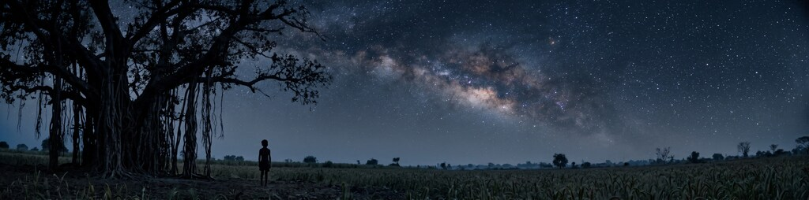
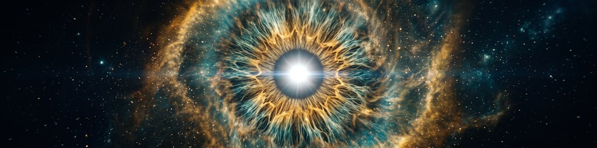
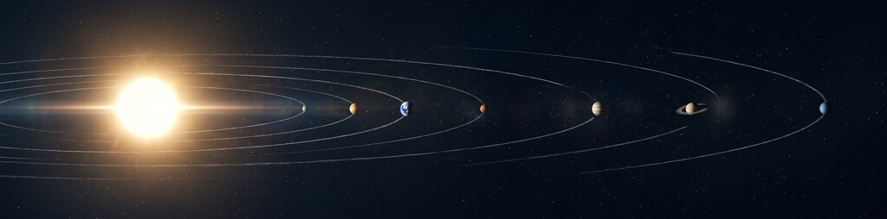
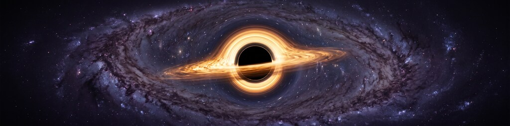
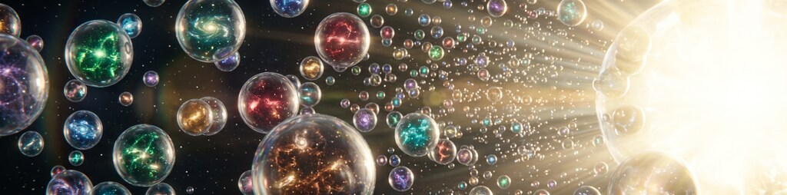
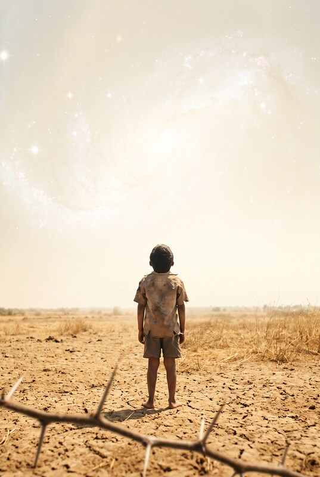
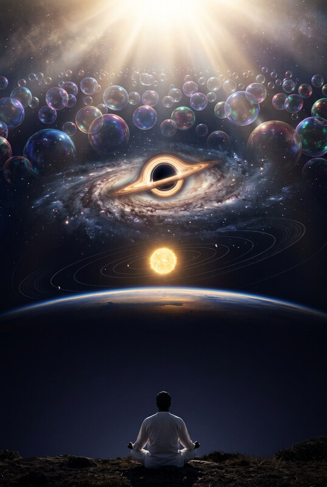

<title>लौकिक · अलौकिक</title>
<meta name="claude:viewport-fit-sides" content="cover">
<link rel="stylesheet" href="https://fonts.googleapis.com/css2?family=IBM+Plex+Mono:wght@400;500&family=Mukta:wght@400;600&family=Rozha+One&family=Tiro+Devanagari+Hindi&display=swap">
<style>
/* बनावट: पन्ना पट्टियों का ढेर है। हर दृश्य अपने रंग की पूरी-चौड़ाई वाली पट्टी है,
   और पट्टियों का क्रम ही फ़िल्म की रंग-पटकथा है। भाग 1 तंग कॉलम में (हद), भाग 2 चौड़े में (बेहद)। */
:root {
  color-scheme: dark;
  --void: #0A0B14;      /* शून्य: पन्ने की ज़मीन */
  --night: #141629;     /* नील स्याह: उठी हुई सतह */
  --khadi: #F1ECDD;     /* खादी सफ़ेद: पाठ */
  --dust: #A9A492;      /* धूल: गौण पाठ */
  --bajra: #E3B552;     /* बाजरा-स्वर्ण: ज़ोर */
  --line: #2B2E47;      /* रेखाएँ */
  --dustland: #6B4526;  /* मिट्टी: क्षितिज के नीचे की ज़मीन */
  --display: 'Rozha One', 'Tiro Devanagari Hindi', 'Noto Serif Devanagari', serif;
  --read: 'Tiro Devanagari Hindi', 'Noto Serif Devanagari', 'Kohinoor Devanagari', serif;
  --ui: 'Mukta', 'Noto Sans Devanagari', 'Kohinoor Devanagari', system-ui, sans-serif;
  --mono: 'IBM Plex Mono', ui-monospace, 'SFMono-Regular', Menlo, monospace;
  --hadd: 56rem;        /* भाग 1 की चौड़ाई */
  --behad: 76rem;       /* भाग 2 की चौड़ाई */
}
*, *::before, *::after { box-sizing: border-box; }
html { scroll-behavior: smooth; scroll-padding-top: 4rem; }
body { background: var(--void); color: var(--khadi); font-family: var(--ui); font-size: 1.0625rem; line-height: 1.7; }
body::before { content: ""; position: fixed; inset: 0 0 auto; height: env(safe-area-inset-top, 0px); z-index: 10; background: var(--void); }
h1, h2, h3, p, dl, dd, ul, ol, figure { margin: 0; }
ul, ol { padding: 0; list-style: none; }
a { color: inherit; text-underline-offset: .2em; }
a:focus-visible, button:focus-visible, summary:focus-visible { outline: 2px solid var(--bajra); outline-offset: 3px; }
.w { width: 100%; max-width: var(--behad); margin-inline: auto; padding-left: max(16px, env(safe-area-inset-left, 0px)); padding-right: max(16px, env(safe-area-inset-right, 0px)); }
.eyebrow { font-family: var(--ui); font-weight: 600; font-size: .8125rem; letter-spacing: .08em; color: var(--bajra); }

/* ऊपर की पट्टी */
.bar { position: sticky; top: env(safe-area-inset-top, 0px); z-index: 9; background: var(--void); border-bottom: 1px solid var(--line); }
.bar .w { display: flex; flex-wrap: wrap; align-items: baseline; gap: .25rem 1.25rem; padding-block: .6rem; }
.bar b { font-family: var(--display); font-weight: 400; font-size: 1.05rem; margin-right: auto; }
.bar a { font-size: .9rem; text-decoration: none; color: var(--dust); }
.bar a:hover { color: var(--khadi); }

/* पोस्टर */
.hero .w { display: grid; grid-template-columns: minmax(0, 34rem) minmax(0, 1fr); gap: 2.5rem 3.5rem; align-items: center; padding-block: 2.5rem 3.5rem; }
.poster { display: grid; gap: 3px; }
.poster .gap { height: .6rem; }
.strip { position: relative; aspect-ratio: 1024 / 254; overflow: hidden; background: var(--night); container-type: size; }
.strip img { position: absolute; inset: 0; width: 100%; height: 100%; object-fit: cover; display: block; }
.strip span { position: absolute; inset: 0; display: grid; place-items: center; font-family: var(--display); font-size: 72cqh; line-height: 1; color: var(--khadi); text-shadow: 0 2px 22px rgba(0, 0, 0, .7), 0 0 3px rgba(0, 0, 0, .5); }
.strip.dark span { color: var(--void); text-shadow: 0 0 22px rgba(255, 255, 255, .75); }
.strip.core span { background: radial-gradient(closest-side, rgba(6, 8, 16, .82) 0 34%, rgba(6, 8, 16, 0) 62%); }
.intro { display: grid; gap: 1.4rem; min-width: 0; }
.intro h1 { font-family: var(--display); font-weight: 400; font-size: clamp(2rem, 4.6vw, 3.2rem); line-height: 1.25; text-wrap: balance; }
.intro .log { font-family: var(--read); font-size: clamp(1.15rem, 2vw, 1.4rem); line-height: 1.8; max-width: 30em; }
.intro .subj { color: var(--dust); font-size: .95rem; }
.parts { display: grid; grid-template-columns: repeat(2, minmax(0, 1fr)); gap: 1.25rem 2rem; border-top: 1px solid var(--line); padding-top: 1.25rem; }
.parts a { text-decoration: none; display: grid; gap: .15rem; }
.parts strong { font-family: var(--display); font-weight: 400; font-size: 1.7rem; line-height: 1.3; }
.parts small { color: var(--dust); font-size: .875rem; line-height: 1.55; }
.parts a:hover strong { color: var(--bajra); }

/* फ़िल्म की भाषा */
.bible { border-top: 1px solid var(--line); }
.bible .w { display: grid; gap: 3.5rem; padding-block: 3.5rem; }
.bible .w > *, .notes .w > *, .film-head .w > * { min-width: 0; }
.bible h2, .notes h2 { font-family: var(--display); font-weight: 400; font-size: clamp(1.9rem, 4vw, 2.6rem); line-height: 1.3; }
.bible h3, .notes h3 { font-family: var(--ui); font-weight: 600; font-size: 1.05rem; color: var(--bajra); margin-bottom: .75rem; }
.idea { display: grid; grid-template-columns: minmax(0, 1.25fr) minmax(0, 1fr); gap: 2.5rem 3.5rem; align-items: start; }
.idea .txt { display: grid; gap: 1rem; }
.idea .txt p { font-family: var(--read); font-size: 1.125rem; line-height: 1.85; max-width: 34em; }
.ratios { display: grid; gap: 1.1rem; }
.ratio { display: grid; gap: .4rem; }
.ratio i { display: block; position: relative; width: 100%; max-width: 17rem; aspect-ratio: 2.39 / 1; border: 1px solid var(--line); background: linear-gradient(var(--night) 0 var(--y), var(--dustland) var(--y) 100%); }
.ratio i::after { content: ""; position: absolute; left: 0; right: 0; top: var(--y); height: 1px; background: var(--bajra); }
.ratio i.none { background: radial-gradient(circle at 50% 40%, var(--khadi), var(--bajra) 55%, var(--night)); }
.ratio i.none::after { display: none; }
.ratio span { font-size: .875rem; color: var(--dust); }
.ratio b { font-family: var(--mono); font-weight: 500; color: var(--khadi); margin-right: .5rem; }
.rules { display: grid; grid-template-columns: repeat(2, minmax(0, 1fr)); gap: 2.5rem 3.5rem; }
.rules.one { grid-template-columns: minmax(0, 46rem); }
.para { font-size: 1rem; max-width: 36em; }
.gapt { margin-top: 1.4rem; }
.rules ol { display: grid; gap: .7rem; counter-reset: r; }
.rules li { counter-increment: r; display: grid; grid-template-columns: 1.6rem minmax(0, 1fr); font-size: 1rem; }
.rules li::before { content: counter(r, devanagari); font-family: var(--mono); color: var(--dust); }
.motifs { display: grid; grid-template-columns: repeat(auto-fit, minmax(15rem, 1fr)); gap: 1.5rem 2.5rem; }
.motifs dt { font-family: var(--display); font-size: 1.3rem; line-height: 1.4; }
.motifs dd { color: var(--dust); font-size: .97rem; }
.face { font-family: var(--read); font-size: clamp(1.2rem, 2.3vw, 1.6rem); line-height: 1.75; max-width: 32em; color: var(--bajra); }
.scroll { overflow-x: auto; }
table { border-collapse: collapse; width: 100%; min-width: 40rem; font-size: .95rem; }
th, td { text-align: left; vertical-align: top; padding: .7rem 1rem .7rem 0; border-bottom: 1px solid var(--line); }
th { font-weight: 600; color: var(--dust); font-size: .8125rem; letter-spacing: .06em; }
td:first-child { font-weight: 600; white-space: nowrap; }
td:nth-child(2) { color: var(--dust); }
td:first-child { white-space: normal; min-width: 9rem; }
.sound { display: grid; gap: .6rem; max-width: 46rem; }
.sound li { padding-left: 1.2rem; position: relative; }
.sound li::before { content: ""; position: absolute; left: 0; top: .8em; width: .5rem; height: 1px; background: var(--bajra); }
.spec { font-family: var(--mono); font-size: .85rem; color: var(--dust); line-height: 1.8; }

/* भाग का शीर्ष */
.film-head { border-top: 1px solid var(--line); background: var(--void) center / cover no-repeat; }
.f1 .film-head { background-image: linear-gradient(90deg, rgba(10, 11, 20, .9) 0 38%, rgba(10, 11, 20, .45)), linear-gradient(0deg, var(--void), rgba(10, 11, 20, 0) 45%), url(art/strip-3.jpg); }
.f2 .film-head { background-image: linear-gradient(90deg, rgba(10, 11, 20, .88) 0 32%, rgba(10, 11, 20, .35)), linear-gradient(0deg, var(--void), rgba(10, 11, 20, 0) 45%), url(art/strip-6.jpg); }
.film-head .w { display: grid; grid-template-columns: minmax(0, 1fr) auto; gap: 1.5rem 3rem; align-items: end; padding-block: 4.5rem 2rem; }
.fh-text { display: grid; gap: 1.2rem; }
.film-head .script, .film-head .script-cap { grid-column: 1 / -1; }
.kart { width: 13.5rem; height: auto; display: block; border: 1px solid var(--line); box-shadow: 0 24px 60px rgba(0, 0, 0, .6); }
.film-head h2 { font-family: var(--display); font-weight: 400; font-size: clamp(3.4rem, 11vw, 7.5rem); line-height: 1.2; color: var(--bajra); background: center / cover; -webkit-background-clip: text; background-clip: text; -webkit-text-fill-color: transparent; }
.f1 .film-head h2 { background-image: linear-gradient(rgba(255, 214, 150, .28), rgba(255, 214, 150, .28)), url(art/strip-2.jpg); filter: brightness(1.55) saturate(1.15); }
.f2 .film-head h2 { background-image: url(art/strip-7.jpg); background-size: 260% auto; background-position: 96% 50%; }
.film-head .tag { font-family: var(--read); font-size: 1.25rem; }
.meta { display: flex; flex-wrap: wrap; gap: .4rem 2rem; font-size: .9rem; color: var(--dust); }
.meta b { color: var(--khadi); font-weight: 600; }
.f1 .scene .w { max-width: var(--hadd); }
.script { display: flex; height: 3.2rem; border: 1px solid var(--line); }
.script a { flex: var(--d) 1 0; min-width: 0; background: var(--bg); color: var(--ink); text-decoration: none; display: grid; place-items: center; font-family: var(--mono); font-size: .75rem; }
.script a:hover { outline: 2px solid var(--khadi); outline-offset: -2px; }
.script-cap { font-size: .8125rem; color: var(--dust); }

/* दृश्य की पट्टी */
.scene { background: var(--bg); color: var(--ink); --soft: color-mix(in srgb, var(--ink) 74%, var(--bg)); --rule: color-mix(in srgb, var(--ink) 26%, var(--bg)); }
.scene .w { display: grid; grid-template-columns: minmax(0, 15rem) minmax(0, 1fr); gap: 2rem 3rem; padding-block: 3.25rem; align-items: start; }
.slate { display: grid; gap: .9rem; }
.no { font-family: var(--mono); font-size: .8rem; color: var(--soft); display: flex; gap: 1rem; flex-wrap: wrap; font-variant-numeric: tabular-nums; }
.no b { color: var(--acc); font-weight: 500; }
.scene h3 { font-family: var(--display); font-weight: 400; font-size: clamp(1.7rem, 3.4vw, 2.3rem); line-height: 1.3; text-wrap: balance; }
.frame { position: relative; width: 100%; max-width: 100%; aspect-ratio: 2.39 / 1; border: 1px solid var(--soft); display: grid; place-items: center; color: var(--acc); background: color-mix(in srgb, var(--ink) 7%, var(--bg)); overflow: hidden; }
.frame svg { width: 56%; height: auto; max-height: 72%; }
.frame img { position: absolute; inset: 0; width: 100%; height: 100%; object-fit: cover; display: block; }
.frame.has-still { border-color: transparent; }
.frame .pt { position: absolute; width: 7px; height: 7px; border-radius: 50%; background: var(--ink); right: 22%; top: 30%; }
.cap { font-size: .8125rem; color: var(--soft); line-height: 1.55; }
.cap b { font-family: var(--mono); font-weight: 500; color: var(--ink); }
.spectrum { display: flex; gap: 3px; align-items: center; }
.spectrum i { flex: 1 1 0; aspect-ratio: 1; border-radius: 50%; background: var(--h); opacity: .4; max-width: 12px; }
.spectrum i:last-child { opacity: 1; box-shadow: 0 0 10px var(--h); }
.body { display: grid; gap: 2rem; min-width: 0; }
.vo { display: grid; gap: .95rem; font-family: var(--read); font-size: clamp(1.15rem, 1.7vw, 1.3rem); line-height: 1.9; max-width: 33em; }
.vo .cue { font-family: var(--ui); font-size: .875rem; line-height: 1.6; color: var(--soft); letter-spacing: .02em; }
.vo .say { color: var(--acc); padding-left: 1.5rem; }
.vo .say span { display: block; font-family: var(--ui); font-weight: 600; font-size: .78rem; letter-spacing: .08em; color: var(--soft); }
.supers { display: grid; gap: .4rem; font-family: var(--mono); font-size: .8rem; line-height: 1.6; color: var(--soft); border-top: 1px solid var(--rule); padding-top: .9rem; max-width: 46rem; }
.supers b { font-family: var(--ui); font-weight: 600; letter-spacing: .06em; color: var(--ink); font-size: .78rem; }
.dir { display: grid; grid-template-columns: repeat(2, minmax(0, 1fr)); gap: 1.4rem 2.2rem; border-top: 1px solid var(--rule); padding-top: 1.4rem; }
.dir dt { font-weight: 600; font-size: .8125rem; letter-spacing: .08em; color: var(--acc); margin-bottom: .2rem; }
.dir dd { font-size: .97rem; line-height: 1.7; color: var(--soft); }
.prompt { border-top: 1px solid var(--rule); padding-top: .9rem; }
.prompt summary { cursor: pointer; font-size: .875rem; font-weight: 600; color: var(--soft); }
.prompt pre { margin: .8rem 0 .6rem; white-space: pre-wrap; overflow-wrap: anywhere; font-family: var(--mono); font-size: .82rem; line-height: 1.65; color: var(--ink); }
.prompt button { font: 600 .8rem var(--ui); color: var(--bg); background: var(--ink); border: 0; padding: .35rem .9rem; cursor: pointer; }

/* स्रोत */
.notes { border-top: 1px solid var(--line); }
.notes .w { display: grid; gap: 2.5rem; padding-block: 3.5rem 5rem; max-width: var(--hadd); }
.notes ul { display: grid; gap: .7rem; }
.notes li { padding-left: 1.2rem; position: relative; color: var(--dust); }
.notes li::before { content: ""; position: absolute; left: 0; top: .8em; width: .5rem; height: 1px; background: var(--bajra); }
.notes li b { color: var(--khadi); font-weight: 600; }
.notes li a { color: var(--khadi); overflow-wrap: anywhere; }

@media (max-width: 52rem) {
  .hero .w, .idea, .rules, .scene .w, .film-head .w { grid-template-columns: minmax(0, 1fr); }
  .kart { width: 9rem; grid-row: 1; }
  .hero .w { padding-block: 1.5rem 2.5rem; }
  .slate { grid-template-columns: minmax(0, 1fr) minmax(0, 9rem); align-items: start; }
  .slate > .no, .slate > h3 { grid-column: 1 / -1; }
  .slate > .frame { grid-column: 2; grid-row: 3 / span 2; }
  .slate > .cap, .slate > .spectrum { grid-column: 1; }
  .dir { grid-template-columns: minmax(0, 1fr); }
  .scene .w { padding-block: 2.5rem; }
  .parts { grid-template-columns: minmax(0, 1fr); }
}
@media (prefers-reduced-motion: reduce) { html { scroll-behavior: auto; } }
</style>
<nav class="bar"><div class="w"><b>लौकिक · अलौकिक</b><a href="#bhasha">फ़िल्म की भाषा</a><a href="#bhag-1">भाग 1</a><a href="#bhag-2">भाग 2</a><a href="#srot">स्रोत</a></div></nav>
<header class="hero"><div class="w">
<div class="poster" role="img" aria-label="सात पट्टियों का पोस्टर: बबूल का काँटा, फटी धरती पर नंगे पाँव, तारों तले बालक, नेत्र, सूर्य और कक्षाएँ, गैलेक्सी का केंद्र, मल्टीवर्स">
<div class="strip dark"><span>लौ</span></div>
<div class="strip"><span>कि</span></div>
<div class="strip"><span>क</span></div>
<div class="gap"></div>
<div class="strip core"><span>अ</span></div>
<div class="strip"><span>लौ</span></div>
<div class="strip"><span>कि</span></div>
<div class="strip"><span>क</span></div>
</div>
<div class="intro">
<p class="eyebrow">दो भागों की डॉक्यूमेंट्री · निर्माण-पुस्तिका</p>
<h1>लौकिक · अलौकिक</h1>
<p class="log">पैंतालीस डिग्री की धूप में एक नंगे पाँव बालक ने आसमान से कहा, “तू नीचे आके ज़रा देख।” भाग 1 उस सवाल की कहानी है। भाग 2 उस जवाब की।</p>
<p class="subj">बापूजी दशरथभाई पटेल · विश्व परिवर्तक ईश्वरीय विद्यालय, चैनपुर, अहमदाबाद</p>
<div class="parts">
<a href="#bhag-1"><span class="eyebrow">भाग 1 · लौकिक</span><strong>नंगे पाँव</strong><small>एक बालक, जिसने ईश्वर से शिकायत की<br>9 मिनट 50 सेकंड · 2.39:1</small></a>
<a href="#bhag-2"><span class="eyebrow">भाग 2 · अलौकिक</span><strong>बेहद</strong><small>ब्रह्मांड के पार की यात्रा, जैसी बापूजी बताते हैं<br>9 मिनट 50 सेकंड · 2.39:1</small></a>
</div>
</div>
</div></header>

<section class="bible" id="bhasha"><div class="w">
<h2>फ़िल्म की भाषा</h2>
<div><h3>सबसे बड़ा संदेश: समय की पुकार</h3><p class="face">फ़िल्म का सबसे बड़ा संदेश है, समय की पुकार: महाकाल प्रलय से पहले हर आत्मा जागे, अपने आप को पहचाने, और परमशांति के सामूहिक संकल्प से विश्व का पॉज़िटिव परिवर्तन हो। भाग 1 इस पुकार तक पहुँचने की कहानी है; भाग 2 इसे सीधे कहता है। दोनों भाग चैनल से जुड़ने और पुस्तकें पढ़ने के आह्वान पर ख़त्म होते हैं।</p></div>
<div class="rules"><div><h3>अंदाज़</h3><ol><li><span>शुरुआत तीस सेकंड के ट्रेलर जैसी: तेज़ कट, हर कट पर हिट, स्क्रीन पर तीन सवाल, फिर ब्राम के साथ शीर्षक।</span></li><li><span>हर शॉट चलती तस्वीर है: AI वीडियो या मोशन ग्राफ़िक्स। स्थिर चित्र पर धीमी चाल वाला तरीक़ा नहीं चलेगा। शॉट तीन से छह सेकंड के।</span></li><li><span>हर भाग छह अध्यायों में। हर अध्याय-कार्ड एक ड्रम-हिट के साथ आता है, जैसे आपकी पिछली फ़िल्म में।</span></li><li><span>बापूजी के कथन छपे हुए कार्ड की तरह आते हैं, पन्ना पलटने की आवाज़ के साथ; तारीख़ें और जगहें टाइप होते अक्षरों में।</span></li><li><span>असली बापूजी बार-बार दिखते हैं: उनकी तस्वीरें, उनके वीडियो की खिड़की, उनका आश्रम।</span></li><li><span>अंत यूट्यूब-एंडिंग पर: बिंदु से बटन, 2.1 करोड़+, Subscribe।</span></li></ol></div><div><h3>टाइपोग्राफ़ी</h3><ol><li><span>कोई ड्रॉप-शैडो, कोई चमक, कोई आउटलाइन नहीं। अक्षर साफ़ दिखें, इसके लिए उन्हें फ़्रेम के शांत हिस्से पर रखा जाता है; ज़रूरत हो तो पूरे निचले हिस्से पर हल्की ढलान (gradient), किसी एक शब्द के पीछे धब्बा नहीं।</span></li><li><span>एक ही परिवार के अक्षर: शीर्षक भारी, बाक़ी हल्के। सफ़ेद और एक स्वर्ण, बस दो रंग।</span></li><li><span>छोटे अक्षर, बहुत ख़ाली जगह: काले पर्दे पर बीच में एक पंक्ति, जैसे बड़े स्ट्रीमिंग वृत्तचित्रों में।</span></li><li><span>अक्षर पंक्ति-दर-पंक्ति mask से खुलते हैं, 8 से 12 फ़्रेम में; उछलते या घूमते नहीं।</span></li><li><span>नाम और जगह के लिए निचले कोने में दो पंक्तियाँ और एक महीन रेखा; हर बार एक ही जगह, एक ही आकार।</span></li><li><span>पोस्टर वाला शीर्षक (मिट्टी की बनावट वाले अक्षर) केवल शीर्षक-दृश्य में; बाक़ी फ़िल्म में सादे सफ़ेद अक्षर।</span></li></ol></div></div>
<div class="idea">
<div class="txt"><h3>एक विचार: हद से बेहद</h3><p>हिंदी पुस्तक अपने को “लौकिक और अलौकिक कहानी” कहती है। फ़िल्म उसी बँटवारे पर खड़ी है। भाग 1 धरती पर रहता है। भाग 2 धरती छोड़ देता है।</p><p>दोनों भाग एक ही शॉट पर खुलते और बंद होते हैं: तपा हुआ खेत, बबूल का काँटा, एक नंगा पाँव। भाग 1 में यह सवाल है। भाग 2 के अंत में वही शॉट जवाब बनकर लौटता है।</p><p>पूरी सीरीज़ 2.39:1 के सिनेमा-फ़्रेम में है। हद और बेहद का फ़र्क़ क्षितिज से आता है। भाग 1 में क्षितिज फ़्रेम के ऊपरी हिस्से में रहता है: ज़मीन ज़्यादा, आसमान कम। 1997 में वह नीचे उतरता है और आसमान खुल जाता है। भाग 2 में क्षितिज ग़ायब हो जाता है।</p></div>
<div class="ratios">
<div class="ratio"><i style="--y:26%"></i><span><b>भाग 1</b>क्षितिज ऊपर: ज़मीन ज़्यादा, आसमान कम</span></div>
<div class="ratio"><i style="--y:82%"></i><span><b>1997</b>क्षितिज उतरता है, आसमान खुलता है</span></div>
<div class="ratio"><i class="none"></i><span><b>भाग 2</b>क्षितिज नहीं: बेहद</span></div>
</div>
</div>
<div class="rules">
<div><h3>भाग 1 · धरती का कैमरा</h3><ol><li><span>कैमरा बालक की आँख से ऊँचा कभी नहीं जाता: 90 सेमी। बड़ा होने पर 150 सेमी।</span></li><li><span>सिर्फ़ ज़मीन के समानांतर गति: डॉली, मोटर-चालित स्लाइडर, स्टेडीकैम। न क्रेन, न ड्रोन, न हैंडहेल्ड।</span></li><li><span>क्षितिज हमेशा फ़्रेम के ऊपरी तिहाई में: ज़मीन ज़्यादा, आसमान कम।</span></li><li><span>हर अध्याय पैरों के एक शॉट से शुरू होता है।</span></li><li><span>हर बचपन का अध्याय पुस्तक के मूल रेखाचित्र से खुलता है, जो जीवित दृश्य में बदल जाता है।</span></li><li><span>पुराने, नरम कोटिंग वाले 2x एनामॉर्फ़िक लेंस, 35mm ग्रेन, 24 fps। काँटे और धूल के लिए 96 से 1000 fps।</span></li><li><span>पहली बार कैमरा ऊपर उठता है अंतिम दृश्य में। वहीं क्षितिज नीचे उतरता है।</span></li></ol></div>
<div><h3>भाग 2 · आकाश का कैमरा</h3><ol><li><span>कैमरा सिर्फ़ ऊपर-नीचे और आगे-पीछे चलता है। दाएँ-बाएँ पैन कभी नहीं।</span></li><li><span>पूरा आरोहण एक अटूट शॉट जैसा दिखता है। कट सफ़ेद और काले क्षणों में छिपे हैं।</span></li><li><span>हर पड़ाव पर पिछला पड़ाव एक बिंदु बनकर फ़्रेम में टिका रहता है, ताकि पैमाना कभी न खोए।</span></li><li><span>साफ़, आधुनिक 2x एनामॉर्फ़िक लेंस। क्षितिज फ़्रेम से ग़ायब।</span></li><li><span>ध्वनि ट्रेलर जैसी घनी: व्हूश, राइज़र, बूम। और तीन जगह पूरा मौन।</span></li><li><span>विज्ञान के तथ्य कथन में नहीं, स्क्रीन पर छोटे अक्षरों में आते हैं, ताकि अनुभव-कथन और मापा हुआ तथ्य कभी न घुलें।</span></li></ol></div>
</div>
<div><h3>बार-बार लौटने वाली छवियाँ</h3><dl class="motifs"><div><dt>पाँव</dt><dd>शिशु का अँगूठा, काँटे पर उतरता पाँव, कपड़े में लिपटे पैर, अलग-अलग पट्टियों वाली चप्पलें, पॉलिश किए जूते, फिर ध्यान में नंगे पैर। एक जीवन, सिर्फ़ पैरों से।</dd></div><div><dt>काँटा → बिंदु</dt><dd>काँटे की नोक धुँधली होकर प्रकाश का बिंदु बनती है। वही बिंदु तारा है। भाग 2 में वही उलटकर उजाले के बीच काला बिंदु और ब्लैक होल बनता है।</dd></div><div><dt>चॉक की धूल → तारे</dt><dd>भाग 1 की कक्षा में खड़िया की धूल। भाग 2 के पहले शॉट में वही धूल हवा में रुककर तारों का मैदान बन जाती है।</dd></div><div><dt>घंटी → तानपुरा</dt><dd>भोर में गाँव में घूमती राम-नाम की घंटी भाग 1 का सुर है। भाग 2 में वही स्वर तीन सप्तक नीचे उतरकर तानपुरे का आधार बनता है।</dd></div><div><dt>परम सफ़ेद</dt><dd>शुद्ध सफ़ेद रोशनी भाग 1 में सिर्फ़ तीन बार आती है: आधी रात का शिशु, बारह घंटे का ध्यान, छह जनवरी। HDR में सबसे उजला सफ़ेद पूरी सीरीज़ में एक ही बार, “बेहद” पर।</dd></div></dl></div>
<div><h3>चेहरे का नियम</h3><p class="face">बापूजी का चेहरा कभी AI से नहीं बनाया जाएगा। वह केवल असली तस्वीरों और आश्रम के असली फ़ुटेज में दिखते हैं; उन तस्वीरों पर सिर्फ़ कैमरा चलता है, चेहरा नहीं बदलता। पुनर्रचित दृश्यों में बालक और युवक की सिर्फ़ पीठ, हाथ, पैर, आँखें या सिल्हूट आते हैं।</p></div>
<div><h3>बाल-पात्र</h3><p class="para">बाल-पात्र वही बच्चा है जिसकी तस्वीर आपने दी: वही चेहरा, वही घुँघराले बाल, वही त्वचा का रंग, कान में वही छोटी बाली। कैरेक्टर शीट Seedream 4.5 से बनी है और हर दृश्य में संदर्भ के रूप में जाएगी। पहनावा उस दौर के उत्तर गुजरात के गाँव का: हाथ-कते सूत का बिना कॉलर का झबला और छोटी धोती, नंगे पाँव। पैंट, निकर या टी-शर्ट नहीं। गले में कुछ नहीं।</p></div>
<div><h3>नया दर्शक भी समझे, और देखता रहे</h3><ul class="sound"><li>पहले पंद्रह सेकंड में ही फ़िल्म का सवाल सामने आ जाता है: तपती धूप में खड़े बालक की शिकायत।</li><li>हर भाग अपने में पूरा है। भाग 2 के पहले दस सेकंड भाग 1 का सवाल दोहराते हैं, ताकि नया दर्शक भी साथ चले।</li><li>पैमाने की सीढ़ी: फ़्रेम के कोने में पाँच पायदानों का छोटा ग्राफ़िक (ब्रह्मांड → महाब्रह्मांड → परम महाब्रह्मांड → मल्टीवर्स → बेहद)। हम जिस पड़ाव पर हैं, वही पायदान जलता है।</li><li>हर नया शब्द पहली बार आने पर स्क्रीन पर लिखा आता है, और उसके नीचे आम भाषा में एक पंक्ति। जैसे: “ब्रह्मांड (बापूजी की भाषा में): एक सूर्य और उसके ग्रह।”</li><li>हर चालीस से साठ सेकंड पर एक मोड़: कोई सवाल, कोई ख़ामोशी, या पैमाने की छलाँग। कोई दृश्य सवा मिनट से लंबा नहीं।</li><li>अंग्रेज़ी सबटाइटल शुरू से, ताकि हिंदी न जानने वाला दर्शक भी देख सके।</li></ul></div>
<div><h3>बापूजी की असली तस्वीरें कहाँ आएँगी</h3><div class="scroll"><table><thead><tr><th>तस्वीर</th><th>फ़ाइल</th><th>फ़िल्म में जगह</th></tr></thead><tbody><tr><td>सफ़ेद कुर्ते में ऊपर देखता नन्हा बालक (कटआउट)</td><td>Untitled-6.png</td><td>बाल-पात्र का मुख्य संदर्भ। भाग 1 का शीर्षक-दृश्य, और भाग 2 में “काला बिंदु” तथा अंतिम दृश्य के प्रतीकात्मक शॉट।</td></tr><tr><td>युवावस्था का चित्र, चेक की कमीज़ और टाई में</td><td>IMG_20220426_012151-1.jpg</td><td>भाग 1, “दस पैसे”: अहमदाबाद और पढ़ाई के वर्ष।</td></tr><tr><td>सूट-टाई में, दो लोगों के साथ पुरानी तस्वीर</td><td>IMG-20251126-WA0080.jpg</td><td>भाग 1, “दशरथ पटेल एंड कंपनी”: वकालत के वर्ष।</td></tr><tr><td>सफ़ेद कुर्ते में, बगीचे में खड़े</td><td>Picsart_24-02-05_19-53-23-567.jpg, Picsart_24-02-23_12-34-26-123.jpg</td><td>भाग 1 की अंतिम पंक्ति “और फिर, बापूजी”; भाग 2 का अंतिम दृश्य। सबसे ऊँची गुणवत्ता की तस्वीरें।</td></tr><tr><td>ऊनी टोपी और स्वेटर में, फूलों के बीच</td><td>IMG-20250212-WA0004.jpg, IMG-20250212-WA0008.jpg, IMG-20260818-WA0034.jpg, IMG-20260818-WA0035.jpg</td><td>भाग 2, “विनाश नहीं”: आज के बापूजी, सहज और पास के।</td></tr><tr><td>पॉडकास्ट स्टूडियो में, माइक के सामने</td><td>IMG-20250205-WA0011.jpg, IMG-20250205-WA0010.jpg</td><td>भाग 2, “पीछे की क़तार”: दो करोड़ श्रोताओं वाली पंक्ति पर।</td></tr><tr><td>“Life in Multiverse” पुस्तक के साथ</td><td>IMG-20251224-WA0114.jpg, IMG-20240302-WA0009.jpg</td><td>भाग 2, “बेहद” से ठीक पहले: मल्टीवर्स का ज्ञान पुस्तक के रूप में।</td></tr><tr><td>पुराने वीडियो का फ़्रेम: बैठे हुए श्रोता</td><td>IMG-20260104-WA0031.jpg</td><td>भाग 2, “हवाई ज्ञान”: शुरुआती दिनों की कक्षा का असली दृश्य।</td></tr><tr><td>आश्रम: लॉन के पार सफ़ेद भवन (तीन कोण)</td><td>IMG_0846, IMG_0847, IMG_0849</td><td>भाग 1 का अंत, “चैनपुर में एक आश्रम बनाया”; भाग 2, “विनाश नहीं”।</td></tr><tr><td>आश्रम: लॉन के ऊपर सीधा सूरज</td><td>IMG_0726</td><td>भाग 2, “एक ब्रह्मांड”: आरोहण यहीं से शुरू होता है। कैमरा इसी लॉन से सूरज की ओर उठता है।</td></tr><tr><td>आश्रम: लाल फूलों के बीच से भवन</td><td>IMG_0729</td><td>भाग 2 का अंतिम दृश्य: अवरोहण के बाद, आज का आश्रम।</td></tr></tbody></table></div></div>
<div><h3>बनाने की विधि और क्रेडिट</h3><div class="scroll"><table><thead><tr><th>विधि</th><th>कहाँ</th><th>लागत</th></tr></thead><tbody><tr><td>स्थिर चित्र (पहला फ़्रेम)</td><td>हर शॉट का पहला फ़्रेम, बाल-पात्र की कैरेक्टर शीट के संदर्भ से</td><td>50 से 65 क्रेडिट प्रति चित्र</td></tr><tr><td>AI वीडियो: Kling 2.5 (1080p)</td><td>ज़्यादातर शॉट: पहले फ़्रेम से चलती तस्वीर, 5 या 10 सेकंड</td><td>10 सेकंड = 650 क्रेडिट</td></tr><tr><td>AI वीडियो: Seedance 2.5 (1080p)</td><td>सिर्फ़ सबसे कठिन शॉट: धूल से तारे, आरोहण, प्रकाश का महासागर</td><td>10 सेकंड = 7,900 क्रेडिट</td></tr><tr><td>असली तस्वीरें और फ़ुटेज</td><td>बापूजी और आश्रम</td><td>कोई क्रेडिट नहीं</td></tr><tr><td>मोशन ग्राफ़िक्स और टाइपोग्राफ़ी</td><td>शीर्षक, अध्याय-कार्ड, पैमाने की सीढ़ी, यूट्यूब-एंडिंग</td><td>कोई क्रेडिट नहीं</td></tr><tr><td>कथन</td><td>Google की आवाज़</td><td>लगभग 20 क्रेडिट प्रति अंश</td></tr><tr><td>संगीत और ध्वनि-प्रभाव</td><td>आपकी Envato लाइब्रेरी</td><td>कोई क्रेडिट नहीं</td></tr></tbody></table></div><p class="para gapt">एक भाग में लगभग 120 शॉट हैं। ऊपर की विधि से एक भाग लगभग 80 हज़ार से 1 लाख क्रेडिट में बनता है, दोबारा बनाने की गुंजाइश समेत; दोनों भाग लगभग 2 लाख में। पूरा भाग केवल Seedance से बनाने पर यही काम 4.5 लाख का पड़ता।</p></div>
<div><h3>कैमरा-गति: उपकरण</h3><dl class="motifs"><div><dt>मोशन-कंट्रोल रिग</dt><dd>दोहराए जा सकने वाले मूव। लाइव प्लेट और CG एक ही रास्ते पर चलते हैं, इसलिए जोड़ दिखता नहीं।</dd></div><div><dt>टेलीस्कोपिक क्रेन</dt><dd>भाग 1 का अंतिम आरोहण: खाट से छत के पार, एक ही साँस में।</dd></div><div><dt>डॉली और ट्रैक</dt><dd>भाग 1 की हर लंबी चाल। ट्रैक समतल किया हुआ, गति मोटर से नियंत्रित।</dd></div><div><dt>स्टेडीकैम या ARRI Trinity</dt><dd>चलते पैरों और गलियों के लंबे, बिना कट के शॉट।</dd></div><div><dt>मोटर-चालित स्लाइडर और प्रोब लेंस</dt><dd>काँटे, खड़िया की धूल और पानी के मैक्रो: कैमरा चीज़ों के बीच से गुज़रता है।</dd></div><div><dt>हाई-स्पीड कैमरा</dt><dd>1000 fps: उतरता पाँव, रुकती धूल, उछलती बूँदें।</dd></div><div><dt>ड्रोन</dt><dd>केवल भाग 2 में, और केवल सीधा ऊपर या सीधा नीचे।</dd></div></dl></div>
<div class="rules one"><div><h3>कैमरा-गति: सात नियम</h3><ol><li><span>हर मूव ease-in और ease-out के साथ शुरू और ख़त्म होता है। रैखिक (linear) कीफ़्रेम कहीं नहीं।</span></li><li><span>एक शॉट, एक अक्ष। डॉली के साथ पैन नहीं, क्रेन के साथ ज़ूम नहीं।</span></li><li><span>गति इतनी धीमी कि दर्शक मूव को नहीं, बदलाव को महसूस करे। ज़्यादातर शॉट 20 से 60 सेकंड के हैं।</span></li><li><span>न हैंडहेल्ड, न झटका, न व्हिप-पैन, न ज़ूम, न नक़ली कैमरा-शेक।</span></li><li><span>After Effects में कैमरा हमेशा null rig पर। गति का वक्र Graph Editor में हाथ से बनाया जाता है।</span></li><li><span>CG कैमरा असली रिग की सीमाओं में रहता है (अधिकतम गति और त्वरण), ताकि वह तैरता हुआ नक़ली न लगे।</span></li><li><span>AI से बने क्लिप की गति असमान हो तो उसे स्थिर करें, optical flow से समान करें, और कैमरा-मूव 2.5D projection से दोबारा बनाएँ।</span></li></ol></div></div>
<div><h3>After Effects की पूरी पाइपलाइन</h3><div class="scroll"><table><thead><tr><th>चरण</th><th>औज़ार</th><th>किसलिए</th></tr></thead><tbody><tr><td>रंग-प्रबंधन</td><td>32-bit float, ACEScg, OpenColorIO</td><td>3D से EXR मल्टीपास (beauty, depth, cryptomatte, motion vectors)। पूरा कम्प रैखिक रोशनी में, ताकि चमक और धुँधलापन असली लेंस की तरह बर्ताव करें।</td></tr><tr><td>3D</td><td>Cinema 4D + Redshift, Houdini, Blender</td><td>गैलेक्सी, कॉस्मिक वेब, प्रकाश का महासागर और बुलबुले यहीं बनते हैं। हल्के 3D के लिए AE में Element 3D।</td></tr><tr><td>ट्रैकिंग</td><td>3D Camera Tracker, Mocha Pro, Lockdown</td><td>हर लाइव प्लेट का कैमरा हल किया जाता है, ताकि धूल, रोशनी और टाइप उसी जगह में बैठें।</td></tr><tr><td>कण</td><td>Trapcode Particular और Form, Stardust, Plexus</td><td>धूल, चॉक, तारे, बूँदें। Plexus से कॉस्मिक वेब के रेशे।</td></tr><tr><td>प्रकाश</td><td>Deep Glow, Optical Flares, Trapcode Shine</td><td>bloom भौतिक रूप से सही ढलान के साथ। flare केवल वहाँ, जहाँ फ़्रेम में सचमुच रोशनी का स्रोत है।</td></tr><tr><td>लेंस</td><td>Frischluft Lenscare, depth pass</td><td>एनामॉर्फ़िक अंडाकार bokeh, किनारों का हल्का distortion और chromatic aberration, हर CG शॉट पर असली लेंस से मिलाकर।</td></tr><tr><td>गति</td><td>ReelSmart Motion Blur, Twixtor</td><td>180° शटर का motion blur हर CG और धीमे किए गए शॉट पर। धीमी गति optical flow से।</td></tr><tr><td>ग्रेन</td><td>Neat Video, स्कैन की हुई 35mm ग्रेन</td><td>पहले शोर हटाएँ, काम करें, फिर सब परतों पर एक ही ग्रेन चढ़ाएँ, ताकि AI, CG और असली फ़ुटेज एक ही फ़िल्म लगें।</td></tr><tr><td>फ़िनिश</td><td>DaVinci Resolve, Dolby Vision</td><td>भाग 1 पर फ़िल्म-प्रिंट जैसा ग्रेड और halation। भाग 2 साफ़ और गहरा; सबसे उजला सफ़ेद सिर्फ़ “बेहद” पर।</td></tr></tbody></table></div></div>
<div><h3>हस्ताक्षर शॉट और उनकी विधि</h3><div class="scroll"><table><thead><tr><th>तकनीक</th><th>कहाँ</th><th>कैसे</th></tr></thead><tbody><tr><td>रेखाचित्र जीवित</td><td>भाग 1, बचपन</td><td>पुस्तक के रेखाचित्र 1200 dpi पर स्कैन → shape layers → Trim Paths से रेखा-दर-रेखा उभार → Turbulent Displace 2px + Posterize Time 8 fps की line-boil → 12 फ़्रेम में मिलते हुए लाइव शॉट में डिज़ॉल्व।</td></tr><tr><td>2.5D तस्वीरें</td><td>दोनों भाग</td><td>असली फ़ोटो को Photoshop में परतों में काटें, पीछे content-aware fill, After Effects में 35mm 3D कैमरा, 20 सेकंड में 5% पुश, depth map से Camera Lens Blur, ऊपर धूल और ग्रेन।</td></tr><tr><td>चॉक से तारे</td><td>भाग 2, पहला शॉट</td><td>1000 fps मैक्रो प्लेट, कण-तंत्र (Particular या CC Particle World) प्लेट से ट्रैक; time-remap से गति शून्य; हर कण तारे के बिंदु में बदले; बोर्ड का हरा-काला ग्रेड होकर नील-काला।</td></tr><tr><td>प्रकाश शरीर</td><td>भाग 2</td><td>Roto Brush से सिल्हूट, भीतर Fractal Noise से बहती प्रकाश-धाराएँ, किनारों पर light-wrap, bloom की तीन परतें (20/60/160px)। चेहरे के नक़्श कभी नहीं।</td></tr><tr><td>आरोहण</td><td>भाग 2 की रीढ़</td><td>ड्रोन → उपग्रह चित्र → CG। nested precomps पर exponential scale; हर 10 सेकंड में दूरी दस गुना। जोड़ सूर्य की चमक और ब्लैक होल की छाया में छिपे हैं।</td></tr><tr><td>ब्लैक होल</td><td>भाग 2</td><td>ray-marched gravitational lensing (Blender), या AE में Polar Coordinates + Displacement। छल्ले की एक तरफ़ Doppler से ज़्यादा चमकीली।</td></tr><tr><td>सत्रह सृजन</td><td>भाग 2</td><td>एक ही precomp सोलह बार, हर चक्र 8 फ़्रेम छोटा, hue हर बार 21° घूमती हुई। सत्रहवाँ खिलकर ठहर जाता है।</td></tr><tr><td>उतरता क्षितिज</td><td>भाग 1 का अंत</td><td>क्रेन, ड्रोन और CG आकाश की तीन प्लेटें एक ही कैमरा-पथ पर; क्षितिज 240 फ़्रेम में फ़्रेम के ऊपरी तिहाई से निचले किनारे तक उतरता है। जोड़ बादलों के white-out में।</td></tr></tbody></table></div></div>
<div><h3>स्थान: जो जहाँ हुआ, वहीं जैसा दिखे</h3><div class="scroll"><table><thead><tr><th>जगह</th><th>कहाँ, कब</th><th>पर्दे पर क्या सही होना चाहिए</th></tr></thead><tbody><tr><td>अखज और अंबासन</td><td>मेहसाणा ज़िला, उत्तर गुजरात</td><td>समतल, अर्ध-शुष्क मैदान और रेतीली-दोमट मिट्टी। खेतों में बाजरा, अरंडी (दिवेल), जीरा, कपास। पेड़: बबूल, नीम, बरगद, आम। कच्चे, लिपे हुए मकान, देशी खपरैल की छत। कांकरेज बैलों की बैलगाड़ी, मेहसाणी भैंस। पुरुष सफ़ेद धोती और सफ़ेद पगड़ी में; स्त्रियाँ गुजराती ढंग की साड़ी में, पल्लू सामने।</td></tr><tr><td>ननिहाल का रास्ता और हाइवे</td><td>1960 का दशक</td><td>दो लेन की सड़क, किनारे बबूल। गाड़ी उस दौर की हिंदुस्तान एंबेसडर, जिसे गाँव वाले “कछुआ” कहते थे। मई की दोपहर: तापमान 45 डिग्री के आसपास, आसमान सफ़ेद, परछाइयाँ छोटी।</td></tr><tr><td>अहमदाबाद</td><td>1970 से 1990 का दशक</td><td>पुराने शहर की पोलें, साबरमती, कपड़ा मिलों की चिमनियाँ, लाल रंग की AMTS बसें, आश्रम रोड का दफ़्तरी इलाक़ा। दफ़्तर के दृश्य पुस्तक की असली “ऑफ़िस की फ़ोटो” से मिलाकर: बोर्ड, मेज़, काला कोट।</td></tr><tr><td>परमशांति भवन, चैनपुर</td><td>न्यू राणीप रोड, अहमदाबाद</td><td>सफ़ेद दो-मंज़िला भवन, छत पर सफ़ेद झंडे और सोलर पैनल, सामने बड़ा खुला लॉन, घने पुराने पेड़, लाल फूलों की झाड़ियाँ, एक ओर गुलाबी दीवार, और पीछे शहर की ऊँची रिहायशी इमारतें। ये सब आपकी भेजी असली तस्वीरों से लिया गया है। आश्रम के दृश्य इन्हीं तस्वीरों और असली फ़ुटेज से बनेंगे; इस जगह की कोई तस्वीर AI से नहीं गढ़ी जाएगी।</td></tr></tbody></table></div><ul class="sound gapt"><li>हर AI शॉट से पहले उस जगह की असली तस्वीरें Magnific में संदर्भ (reference) के रूप में दी जाएँगी। बिना संदर्भ के कोई जगह नहीं बनेगी।</li><li>गाँव के दृश्यों के लिए अखज और अंबासन में एक दिन की रेकी: मिट्टी का रंग, मकानों की बनावट, मंदिर, बरगद, कुआँ और खेत की तस्वीरें, सुबह और दोपहर दोनों रोशनी में।</li><li>मौसम और फ़सल सही रखें: काँटे और लू वाले दृश्य मई-जून के; बाजरे के खड़े खेत अगस्त से अक्टूबर के।</li><li>कपड़े, बर्तन, गाड़ियाँ और नोट-सिक्के उसी दशक के हों। परिवार की पुरानी तस्वीरें इसका पहला संदर्भ हैं।</li><li>बापूजी की तस्वीरें Drive फ़ोल्डर से और आश्रम की पाँच तस्वीरें सीधे मिल गई हैं। अखज और अंबासन गाँव की तस्वीरें अभी नहीं हैं; गाँव के दृश्य तब तक पुस्तक के रेखाचित्रों और उत्तर गुजरात के सामान्य विवरण पर टिके हैं।</li></ul></div>
<div class="rules"><div><h3>भाग 1 · धरती का संगीत</h3><p class="para">एकतारा, रावणहत्था, सारंगी, बाँसुरी, मंजीरा और पीतल की घंटी। असली वादक, असली कमरे में रिकॉर्ड; लाइब्रेरी के लूप नहीं। भोर के दृश्य अहीर भैरव में, गाँव के दृश्य मांड में, रात का मंदिर मालकौंस में। बारह वादकों का तार-समूह पूरी फ़िल्म में सिर्फ़ दो बार आता है: सोने की चेन पर, और छह जनवरी पर।</p></div><div><h3>भाग 2 · आकाश का संगीत</h3><p class="para">चार तानपुरे, रुद्र वीणा, सुरबहार, बिना शब्दों का मिश्रित कंठ-समूह, चालीस वादकों का तार-समूह जो केवल लंबे हार्मोनिक्स बजाता है, और घंटी की आवाज़ से बनी दानेदार (granular) परतें। अंत भैरवी में।</p></div></div>
<div><h3>तीन संगीत-सूत्र</h3><dl class="motifs"><div><dt>घंटी</dt><dd>तीन स्वरों का छोटा टुकड़ा। भाग 1 में पीतल की घंटी पर, भाग 2 में तीन सप्तक नीचे, अंत में फिर अपने असली स्वर में।</dd></div><div><dt>सवाल</dt><dd>ऊपर चढ़ता हुआ वाक्यांश, जो हर बार अधूरा छूटता है। यह पूरा केवल एक बार होता है: भाग 2 के अंतिम शब्द से ठीक पहले।</dd></div><div><dt>आरोहण</dt><dd>शेपर्ड टोन: ऐसा स्वर जो लगातार चढ़ता हुआ लगता है पर कहीं पहुँचता नहीं। अवरोहण में यही उलटा।</dd></div></dl></div>
<div><h3>ध्वनि-प्रभाव</h3><ul class="sound"><li>अंदाज़ आपकी पिछली फ़िल्मों का: हर बड़े कट पर व्हूश, हर अध्याय-कार्ड पर ड्रम या बूम, शीर्षक पर राइज़र और ब्राम, प्रकाश के बिंदु पर सब-बूम, छपे कार्ड पर पन्ना पलटना, टाइप होते अक्षरों पर की-स्ट्रोक।</li><li>घनत्व: शुरुआती ट्रेलर-अंश में हर दो-तीन सेकंड पर एक ध्वनि-घटना, मुख्य फ़िल्म में हर आठ-दस सेकंड पर। आपकी दस मिनट की फ़िल्म में 54 ध्वनियाँ 81 बार आई थीं; यहाँ भी लगभग उतनी ही।</li><li>संगीत और ध्वनि-प्रभाव आपकी Envato लाइब्रेरी से (दोनों Drive फ़ोल्डर)। AI से बनी ध्वनियाँ नहीं। हर फ़ाइल प्रकाशन से पहले Envato पर लाइसेंस करनी है, जैसा आपकी सूची में लिखा है।</li><li>धरती की ध्वनियाँ असली: मेहसाणा की लू, बाजरे के डंठल, बैलगाड़ी के पहिए, कुएँ की घिरनी, ब्लैकबोर्ड पर चॉक।</li><li>मौन तीन जगह, और हर बार किसी बड़े हिट के ठीक बाद: बालक के सवाल के बाद, “महाशिव” के बाद, “बेहद” के बाद।</li></ul><p class="spec gapt">Dolby Atmos (7.1.4) और 5.1 · कथन बीच में, बिना संगीत के नीचे दबे · घंटी सिर के ऊपर घूमती ध्वनि-वस्तु के रूप में · लाउडनेस: संवाद-आधारित −27 LKFS (±2), true peak −2 dBTP से नीचे</p></div>
<div><h3>स्वर और कथन</h3><ul class="sound"><li>भाग 1 के पहले बीस सेकंड में कोई संगीत नहीं। पहले लू, फिर घंटी, फिर एकतारा।</li><li>कथन की आवाज़ Google AI Studio की वही आवाज़ होगी जो आप चुनें। आपने “नीनो” कहा है; Google की सूची में इस नाम की आवाज़ नहीं मिली, इसलिए सही नाम की पुष्टि बाक़ी है। ElevenLabs की आवाज़ें इस्तेमाल नहीं होंगी।</li><li>जहाँ बापूजी की अपनी रिकॉर्डिंग मिलती है, वहाँ सूत्रधार चुप हो जाता है।</li><li>मामा का खेत में गाया गीत “शंकर जटाधारी, नंदी लिया सवारी” बिना साज़ के, दूर से।</li><li>सीरीज़ का अंतिम शब्द लगभग फुसफुसाहट में है। उसके बाद संगीत नहीं लौटता।</li></ul></div>
<div><h3>डिलीवरी</h3><p class="spec">2.39:1 · UHD 4K (3840×2160 कंटेनर, सक्रिय चित्र 3840×1607) · 24 fps · HDR (Dolby Vision) और SDR दोनों ग्रेड · 5.1 और Atmos मिक्स · मूल भाषा हिंदी, अंग्रेज़ी सबटाइटल</p></div>
</div></section>

<section class="film f1" id="bhag-1">
<div class="film-head"><div class="w">
<div class="fh-text">
<p class="eyebrow">भाग 1 · लौकिक</p>
<h2>नंगे पाँव</h2>
<p class="tag">एक बालक, जिसने ईश्वर से शिकायत की</p>
<p class="meta"><span><b>अवधि</b> 9 मिनट 50 सेकंड</span><span><b>फ़्रेम</b> 2.39:1</span><span><b>स्वर</b> स्त्री स्वर</span></p>
</div>

<div class="script" aria-label="रंग-पटकथा"><a href="#bhag-1-00" style="--bg:#F0E3B4;--ink:#1B1730;--d:60" title="पैंतालीस डिग्री · 0:00–1:00">00</a><a href="#bhag-1-01" style="--bg:#232745;--ink:#EFE7D2;--d:60" title="भगत का घर · 1:00–2:00">01</a><a href="#bhag-1-02" style="--bg:#0E1B2E;--ink:#EAF0F4;--d:55" title="आधी रात का प्रकाश · 2:00–2:55">02</a><a href="#bhag-1-03" style="--bg:#D2A056;--ink:#1B1730;--d:55" title="कछुआ · 2:55–3:50">03</a><a href="#bhag-1-04" style="--bg:#2F3B36;--ink:#EDE8D8;--d:50" title="दो पैसे · 3:50–4:40">04</a><a href="#bhag-1-05" style="--bg:#3A1508;--ink:#F5E7CF;--d:65" title="हनुमान जी, ताक़त दो · 4:40–5:45">05</a><a href="#bhag-1-06" style="--bg:#C9C5BA;--ink:#17182A;--d:65" title="दस पैसे · 5:45–6:50">06</a><a href="#bhag-1-07" style="--bg:#3B2A1E;--ink:#F1E6D2;--d:50" title="दशरथ पटेल एंड कंपनी · 6:50–7:40">07</a><a href="#bhag-1-08" style="--bg:#101A3A;--ink:#E9ECF5;--d:50" title="पहला जवाब · 7:40–8:30">08</a><a href="#bhag-1-09" style="--bg:#EEF1F4;--ink:#14162B;--d:80" title="छह जनवरी · 8:30–9:50">09</a></div>
<p class="script-cap">रंग-पटकथा: हर खंड एक दृश्य है, चौड़ाई उसकी अवधि के अनुपात में। किसी खंड पर जाएँ तो वही दृश्य खुलेगा।</p>
</div></div>
<article class="scene" id="bhag-1-00" style="--bg:#F0E3B4;--ink:#1B1730;--acc:#8E3415">
<div class="w">
<div class="slate">
<p class="no"><b>दृश्य 00</b><span>0:00–1:00</span></p>
<h3>पैंतालीस डिग्री</h3>
<figure class="frame has-still"></figure>
<p class="cap"><b>2.39:1</b> · मैक्रो · रैक-फ़ोकस<br>100mm मैक्रो · 96 fps</p>

</div>
<div class="body">
<div class="vo">
<p>गुजरात। मेहसाणा ज़िला। पैंतालीस डिग्री की दोपहर।</p>
<p>एक बालक खेत में खड़ा है। पैरों में चप्पल नहीं। ज़मीन पर बबूल के काँटे।</p>
<p>वह आसमान की ओर देखता है। और प्रार्थना नहीं करता।</p>
<p>वह शिकायत करता है।</p>
<p class="say"><span>बालक</span>तू नीचे आके ज़रा देख। पैर में काँटे लगते हैं। खाने का ठिकाना नहीं है। दुनिया की हालत देख।</p>
<p class="cue">तीन सेकंड सिर्फ़ लू की आवाज़</p>
<p>यह कहानी उसी सवाल की है। और उस जवाब की, जिसे आने में पूरी एक उम्र लगी।</p>
<p class="cue">शीर्षक: नंगे पाँव</p>
</div>

<dl class="dir">
<div><dt>दृश्य</dt><dd>काला पर्दा, सूखी हवा। फिर सफ़ेद-तपा आसमान, बबूल की टहनी, एक काँटा। फटी ज़मीन पर एक छोटा नंगा पाँव उतरता है। काँटे को छूने से ठीक पहले कट। बालक की सिर्फ़ आँखें, भौंहों की छाया में, आसमान की ओर।</dd></div>
<div><dt>कैमरा</dt><dd>कैमरा ज़मीन पर रखा है, 5 सेमी ऊँचाई। काँटे की नोक से उतरते पाँव तक रैक-फ़ोकस। फिर 50mm, बालक की आँख की ऊँचाई पर, स्लाइडर पर बहुत धीमा पुश।</dd></div>
<div><dt>VFX · After Effects</dt><dd>गर्मी की लहर: Displacement Map को धीमे Fractal Noise से चलाएँ (क्षैतिज 6px, ऊपर की ओर बहाव)। हाइलाइट पर halation। 16mm ग्रेन और हल्का gate-weave। शीर्षक धूल के कणों से बनता है: कण अक्षरों के mask पर जमते हैं, फिर हवा उन्हें उड़ा ले जाती है।</dd></div>
<div><dt>ध्वनि</dt><dd>कोई संगीत नहीं। लू, दूर बैल की घंटी, सूखी पत्तियाँ। बालक की आवाज़ बिना रीवर्ब, बहुत पास। शीर्षक पर एक अकेली पीतल की घंटी।</dd></div>
</dl>
<details class="prompt"><summary>मुख्य शॉट का AI प्रॉम्प्ट (अंग्रेज़ी में)</summary><pre>Extreme macro, ground-level shot of a single sharp acacia (babool) thorn on cracked dry earth in rural Gujarat, white-hot overexposed noon sky, a small child's bare dusty foot descending in slow motion toward the thorn, shallow depth of field, heat shimmer, 35mm film grain, anamorphic 2.39:1, bleached straw and ochre palette, no face, no text</pre><button type="button">कॉपी करें</button></details>
</div>
</div>
</article>
<article class="scene" id="bhag-1-01" style="--bg:#232745;--ink:#EFE7D2;--acc:#E0B24A">
<div class="w">
<div class="slate">
<p class="no"><b>दृश्य 01</b><span>1:00–2:00</span></p>
<h3>भगत का घर</h3>
<figure class="frame"><svg viewBox="0 0 120 60" fill="none" stroke="currentColor" stroke-width="1.8" stroke-linecap="round" stroke-linejoin="round" role="img" aria-label="ट्रैकिंग"><rect x="18" y="14" width="22" height="14"/><path d="M40 21h6"/><path d="M12 42h92"/><path d="M96 36l8 6-8 6"/><path d="M20 48v4M36 48v4M52 48v4M68 48v4M84 48v4"/></svg></figure>
<p class="cap"><b>2.39:1</b> · ट्रैकिंग<br>35mm · 40 सेकंड, बिना कट</p>

</div>
<div class="body">
<div class="vo">
<p>चार सौ साल पुराना एक गाँव। अंबासन। कच्चे मकान। कुएँ का पानी। न नल, न बिजली।</p>
<p>इस घर के बुज़ुर्ग को पूरा गाँव “भगत” कहता था। सुबह चार बजे वह राम-नाम की घंटी लेकर गाँव का चक्कर लगाते। खेत में जो उगता, साधु-संतों को खिला देते।</p>
<p>और घर पर कर्ज़ चढ़ता गया।</p>
<p class="cue">विराम</p>
<p>घर की बहू, लक्ष्मी देवी, ने मायके के गहने एक-एक करके बेचे और गिरवी पड़ी ज़मीन छुड़ाई।</p>
<p>तेरह दिसंबर, उन्नीस सौ छप्पन। ननिहाल के गाँव अखज में, उसी माँ ने एक बेटे को जन्म दिया।</p>
<p>नाम रखा गया: दशरथ।</p>
</div>

<dl class="dir">
<div><dt>दृश्य</dt><dd>पुस्तक का मूल रेखाचित्र (बैलगाड़ी और कच्चा घर) रेखा-दर-रेखा खिंचता है और जीवित दृश्य बन जाता है। भोर से पहले का नीला अँधेरा। गली में एक बुज़ुर्ग के नंगे पाँव, हाथ में पीतल की घंटी। आँगन में साधुओं को परोसा जाता भोजन। एक औरत के हाथ, जो गहने कपड़े में बाँधकर आगे बढ़ाते हैं।</dd></div>
<div><dt>कैमरा</dt><dd>घंटी वाले बुज़ुर्ग के साथ घुटने की ऊँचाई पर लंबा ट्रैकिंग शॉट। गहनों पर 85mm, स्थिर। कोई ऊँचा कोण नहीं।</dd></div>
<div><dt>VFX · After Effects</dt><dd>“रेखाचित्र जीवित” का पहला प्रयोग। दीये की रोशनी पर हल्का flicker। कोने में छोटा सुपर: अंबासन, मेहसाणा · 1956।</dd></div>
<div><dt>ध्वनि</dt><dd>हर चार क़दम पर घंटी। दूर “राम… राम…”। पहली बार संगीत: एकतारे का एक सुर, घंटी के स्वर से मिला हुआ।</dd></div>
</dl>
<details class="prompt"><summary>मुख्य शॉट का AI प्रॉम्प्ट (अंग्रेज़ी में)</summary><pre>Pre-dawn blue hour in a 1950s north Gujarat village (Mehsana district) of mud-plastered houses with country clay-tile roofs, a neem tree, low tracking shot at knee height following the bare feet of an elderly Gujarati farmer in a white dhoti and white turban walking down a narrow lane holding a small brass hand-bell, a single oil lamp glowing in a doorway, winter mist, indigo and brass-gold palette, vintage anamorphic lens, 35mm grain, anamorphic 2.39:1, no face</pre><button type="button">कॉपी करें</button></details>
</div>
</div>
</article>
<article class="scene" id="bhag-1-02" style="--bg:#0E1B2E;--ink:#EAF0F4;--acc:#BFD4E6">
<div class="w">
<div class="slate">
<p class="no"><b>दृश्य 02</b><span>2:00–2:55</span></p>
<h3>आधी रात का प्रकाश</h3>
<figure class="frame"><svg viewBox="0 0 120 60" fill="none" stroke="currentColor" stroke-width="1.8" stroke-linecap="round" stroke-linejoin="round" role="img" aria-label="स्थिर"><rect x="34" y="8" width="52" height="30"/><path d="M60 16v14M53 23h14"/><path d="M60 38v6M60 44l-14 10M60 44l14 10M60 44v10"/></svg></figure>
<p class="cap"><b>2.39:1</b> · स्थिर<br>50mm · 25 सेकंड स्थिर</p>

</div>
<div class="body">
<div class="vo">
<p>परिवार में एक क़िस्सा आज भी सुनाया जाता है।</p>
<p>बालक छह महीने का था। घर की एक बुआ उसे खेत में पानी की नाली के पास छोड़कर लौट आई।</p>
<p>रात के बारह बजे, चाँदनी में, वह मिला। पानी में लेटा हुआ। एकदम शांत। पैर का अँगूठा चूसता हुआ।</p>
<p>देखने वालों को लगा, जैसे उसके शरीर से सूरज जैसा प्रकाश निकल रहा हो।</p>
<p class="cue">विराम</p>
<p>माँ ने उसे उठाया, आसमान की ओर देखा, और बस इतना कहा:</p>
<p class="say"><span>माँ</span>जिस पर तेरा साया है, वह कभी डूब नहीं सकता।</p>
</div>

<dl class="dir">
<div><dt>दृश्य</dt><dd>मूल रेखाचित्र (खेत, पानी की नाली, लेटा हुआ शिशु) से शुरुआत। चाँदनी रात। खेतों में दौड़ते पैर, लालटेनें। नाली के किनारे पानी में लेटा शिशु। चेहरा नहीं; सिर्फ़ छोटा पैर, पानी और रोशनी।</dd></div>
<div><dt>कैमरा</dt><dd>दौड़ते पैरों के साथ स्टेडीकैम, घुटने की ऊँचाई पर। शिशु के पास पहुँचते ही कैमरा रुक जाता है: फ़िल्म का पहला पूरी तरह स्थिर, लंबा शॉट।</dd></div>
<div><dt>VFX · After Effects</dt><dd>“परम सफ़ेद” पहली बार। practical LED की रोशनी पर bloom की तीन परतें; पानी पर caustics (Fractal Noise → CC Glass)। रोशनी इतनी हल्की रखें कि उसे चाँदनी भी माना जा सके। फ़ैसला दर्शक करे।</dd></div>
<div><dt>ध्वनि</dt><dd>झींगुर, पानी की धार, भागते क़दम, पुकारें। शिशु के मिलते ही सब हट जाता है, सिर्फ़ पानी बचता है। माँ का वाक्य फुसफुसाहट में।</dd></div>
</dl>
<details class="prompt"><summary>मुख्य शॉट का AI प्रॉम्प्ट (अंग्रेज़ी में)</summary><pre>Full-moon night in a pearl-millet field on the flat sandy plain of Mehsana district, north Gujarat, a narrow irrigation channel with slowly flowing water, a soft unexplained white glow reflecting on the water where a baby's tiny foot is just visible at the edge of frame, lanterns approaching far in the background out of focus, locked-off static shot, deep blue-black palette with one area of pure white light, anamorphic 2.39:1, film grain</pre><button type="button">कॉपी करें</button></details>
</div>
</div>
</article>
<article class="scene" id="bhag-1-03" style="--bg:#D2A056;--ink:#1B1730;--acc:#5F2410">
<div class="w">
<div class="slate">
<p class="no"><b>दृश्य 03</b><span>2:55–3:50</span></p>
<h3>कछुआ</h3>
<figure class="frame has-still"></figure>
<p class="cap"><b>2.39:1</b> · ट्रैकिंग<br>35mm · 30 मीटर डॉली</p>

</div>
<div class="body">
<div class="vo">
<p>चार-पाँच साल की उम्र से खेत। खाने में बाजरे की सूखी रोटी, मिर्च, प्याज़। और पानी।</p>
<p>एक दिन रोटी ऊँचे ताक़ पर रखी थी; हाथ नहीं पहुँचा। बुआ ने रोटी उठाकर बाहर फेंक दी।</p>
<p class="say"><span>बुआ</span>तुझसे अच्छा, कोई कुत्ता खा ले।</p>
<p class="cue">विराम</p>
<p>ननिहाल के रास्ते में हाइवे पड़ता। वहाँ से कभी-कभी एक गोल-सी गाड़ी गुज़रती। गाँव वाले उसे “कछुआ” कहते।</p>
<p class="say"><span>बालक</span>बड़ा होकर मैं तुझे ऐसा कछुआ लाकर दूँगा।</p>
<p class="say"><span>माँ</span>चल झूठा। खाने का ठिकाना नहीं, और चला है कछुआ लाने।</p>
</div>

<dl class="dir">
<div><dt>दृश्य</dt><dd>फटे कपड़े में लिपटे छोटे पैर। थाली में बाजरे की रोटी, मिर्च, प्याज़। ऊँचे ताक़ पर रखी रोटी। फिर धूल भरा हाइवे: माँ और बालक पैदल, पीछे से एक पुरानी गोल गाड़ी गुज़रती है। पुस्तक का रेखाचित्र उसी क्षण आधा-पारदर्शी उभरता है।</dd></div>
<div><dt>कैमरा</dt><dd>ताक़ वाला शॉट नीचे से: रोटी हमेशा फ़्रेम के ऊपरी किनारे पर, पहुँच से बाहर। हाइवे पर सड़क के समानांतर डॉली। गाड़ी फ़्रेम पार कर जाती है पर कैमरा उसका पीछा नहीं करता; सिर्फ़ बालक का सिर घूमता है।</dd></div>
<div><dt>VFX · After Effects</dt><dd>गाड़ी की धूल की तीन परतें, अलग-अलग blur के साथ। रेखाचित्र multiply में 40%, दो सेकंड में घुलता है। पूरा अध्याय मटमैला पीला; गाड़ी इसकी अकेली चमकदार चीज़।</dd></div>
<div><dt>ध्वनि</dt><dd>दूर से आता इंजन, गुज़रते समय डॉप्लर। रोटी फेंके जाने की आवाज़ फ़्रेम के बाहर। माँ की हँसी सूखी नहीं, प्यार भरी।</dd></div>
</dl>
<details class="prompt"><summary>मुख्य शॉट का AI प्रॉम्प्ट (अंग्रेज़ी में)</summary><pre>1960s rural Gujarat, dusty two-lane highway through flat fields of pearl millet and castor with babool and neem trees, a barefoot boy of about six in a torn shirt and his mother in a faded cotton sari draped Gujarati-style with the pallu in front, walking along the roadside seen from behind at child eye level, a rounded cream-coloured 1960s Indian sedan passing through the frame leaving a trail of golden dust, lateral dolly shot, ochre and millet-yellow palette, 35mm grain, anamorphic 2.39:1, no faces</pre><button type="button">कॉपी करें</button></details>
</div>
</div>
</article>
<article class="scene" id="bhag-1-04" style="--bg:#2F3B36;--ink:#EDE8D8;--acc:#D9C27A">
<div class="w">
<div class="slate">
<p class="no"><b>दृश्य 04</b><span>3:50–4:40</span></p>
<h3>दो पैसे</h3>
<figure class="frame"><svg viewBox="0 0 120 60" fill="none" stroke="currentColor" stroke-width="1.8" stroke-linecap="round" stroke-linejoin="round" role="img" aria-label="पुश-इन"><rect x="14" y="6" width="92" height="48"/><rect x="46" y="22" width="28" height="16"/><path d="M14 6l32 16M106 6L74 22M14 54l32-16M106 54L74 38"/><path d="M26 30h12M33 25l6 5-6 5M94 30H82M87 25l-6 5 6 5"/></svg></figure>
<p class="cap"><b>2.39:1</b> · पुश-इन<br>50mm · धूल पर 200 fps</p>

</div>
<div class="body">
<div class="vo">
<p>पढ़ाई में वह हमेशा पहला या दूसरा आता।</p>
<p>एक दिन मास्टर जी ने कक्षा में दो पैसे मँगवाए। घर में किसी ने दो पैसे नहीं दिए।</p>
<p class="say"><span>मास्टर</span>दशरथ, खड़े हो जाओ। हाथ आगे करो।</p>
<p class="cue">छड़ी की एक आवाज़। काला पर्दा।</p>
<p>हाथ कई दिन सूजा रहा। वह लिख भी नहीं सका।</p>
<p>उसी सूजे हुए हाथ के साथ, उस बच्चे ने तय किया कि ग़रीबी को मिटना होगा। कैसे, यह उसे नहीं पता था।</p>
</div>

<dl class="dir">
<div><dt>दृश्य</dt><dd>कक्षा की ज़मीन पर पालथी मारे नंगे पैरों की क़तार। स्लेट, खड़िया। मेज़ पर छड़ी। बालक की खुली हथेली। काला पर्दा। फिर सूजा हुआ हाथ, जो खड़िया नहीं पकड़ पाता।</dd></div>
<div><dt>कैमरा</dt><dd>बच्चों की क़तार के साथ धीमा पुश-इन। छड़ी का वार हम नहीं देखते; कैमरा बालक की आँखों पर रहता है।</dd></div>
<div><dt>VFX · After Effects</dt><dd>खड़िया की धूल का पहला क्लोज़-अप, बैकलिट। यह भाग 2 के “चॉक से तारे” का बीज है। अध्याय पुस्तक के मूल रेखाचित्र (छड़ी वाला मास्टर) से खुलता है।</dd></div>
<div><dt>ध्वनि</dt><dd>स्लेट पर खड़िया। सन्नाटा। छड़ी, एक ही बार, सूखी। फिर सिर्फ़ दिल की धड़कन।</dd></div>
</dl>
<details class="prompt"><summary>मुख्य शॉट का AI प्रॉम्प्ट (अंग्रेज़ी में)</summary><pre>1960s village schoolroom in Gujarat, a row of barefoot children sitting cross-legged on a mud floor with writing slates, a shaft of dusty sunlight from a barred window, chalk dust floating in the backlight, a small boy's open palm held out in the foreground, slow push-in at child eye level, slate-green and chalk-white palette, 35mm grain, anamorphic 2.39:1, faces not shown</pre><button type="button">कॉपी करें</button></details>
</div>
</div>
</article>
<article class="scene" id="bhag-1-05" style="--bg:#3A1508;--ink:#F5E7CF;--acc:#F08A2C">
<div class="w">
<div class="slate">
<p class="no"><b>दृश्य 05</b><span>4:40–5:45</span></p>
<h3>हनुमान जी, ताक़त दो</h3>
<figure class="frame has-still"></figure>
<p class="cap"><b>2.39:1</b> · स्थिर<br>35mm · ज़मीन पर लेटा कैमरा</p>

</div>
<div class="body">
<div class="vo">
<p>रात के नौ बजे, जब गाँव सो जाता, छठी कक्षा का वह लड़का अकेला हनुमान जी के मंदिर जाता।</p>
<p class="say"><span>बालक</span>हनुमान जी, जितनी ताक़त आपके पास है, उतनी मुझे दे दो। मुझे पूरी दुनिया बदलनी है। ऐसी दुनिया नहीं चल सकती।</p>
<p class="cue">तीन सेकंड का सन्नाटा</p>
<p>वह साधुओं से पूछता: आपने भगवान को देखा है? नौवीं में उसने अपने प्रिंसिपल से पूछा: भगवान साकार है या निराकार?</p>
<p class="say"><span>प्रिंसिपल</span>खाने का ठिकाना नहीं। पहले खेत में काम कर। चला है भगवान खोजने।</p>
<p class="cue">विराम</p>
<p>तब उसने एक योजना बनाई। पढ़ूँगा। कमाऊँगा। घर की ज़िम्मेदारी निभाऊँगा। और इक्यावन साल की उम्र में हिमालय जाकर, उससे आमने-सामने पूछूँगा:</p>
<p class="say"><span>बालक</span>तूने ऐसी दुनिया क्यों बनाई?</p>
</div>

<dl class="dir">
<div><dt>दृश्य</dt><dd>अँधेरी पगडंडी पर अकेले छोटे पैर। गाँव का छोटा हनुमान मंदिर, सिंदूरी मूर्ति, एक दीया। बालक की पीठ; हाथ जुड़े नहीं, खुले हुए। फिर खेत: बरगद के नीचे बोरे पर अकेला सोता बालक, ऊपर तारों से भरा आसमान। फ़िल्म में तारे पहली बार दिखते हैं।</dd></div>
<div><dt>कैमरा</dt><dd>बालक के पीछे-पीछे मंदिर तक एक ही शॉट। मूर्ति को हम उसके कंधे के ऊपर से, उसी की नज़र से देखते हैं। बरगद के नीचे कैमरा ज़मीन पर लेटा है और बालक के साथ ऊपर देखता है: स्थिर, तीस सेकंड।</dd></div>
<div><dt>VFX · After Effects</dt><dd>आसमान के लिए असली astro-timelapse प्लेट; तारे असली अनुपात में, कोई नक़ली नेब्युला नहीं। दीये की लौ से आँखों में हल्की catch-light।</dd></div>
<div><dt>ध्वनि</dt><dd>दूर खेत से मामा का गीत, बिना साज़: “शंकर जटाधारी, नंदी लिया सवारी”। मंदिर में बालक के वाक्य के बाद पूरा सन्नाटा। तारों पर एकतारा लौटता है।</dd></div>
</dl>
<details class="prompt"><summary>मुख्य शॉट का AI प्रॉम्प्ट (अंग्रेज़ी में)</summary><pre>Night in a 1960s Gujarati village, a tiny roadside Hanuman shrine with a vermilion-orange idol lit by a single oil lamp, a small barefoot boy seen from behind standing before it with open upturned palms, deep black surroundings, saffron and soot-black palette, over-the-shoulder shot at child height, 35mm grain, anamorphic 2.39:1</pre><button type="button">कॉपी करें</button></details>
</div>
</div>
</article>
<article class="scene" id="bhag-1-06" style="--bg:#C9C5BA;--ink:#17182A;--acc:#7A1E1E">
<div class="w">
<div class="slate">
<p class="no"><b>दृश्य 06</b><span>5:45–6:50</span></p>
<h3>दस पैसे</h3>
<figure class="frame"><svg viewBox="0 0 120 60" fill="none" stroke="currentColor" stroke-width="1.8" stroke-linecap="round" stroke-linejoin="round" role="img" aria-label="ट्रैकिंग"><rect x="18" y="14" width="22" height="14"/><path d="M40 21h6"/><path d="M12 42h92"/><path d="M96 36l8 6-8 6"/><path d="M20 48v4M36 48v4M52 48v4M68 48v4M84 48v4"/></svg></figure>
<p class="cap"><b>2.39:1</b> · ट्रैकिंग<br>50mm · सड़क-स्तर</p>

</div>
<div class="body">
<div class="vo">
<p>ग्यारहवीं के बाद मामा उसे अहमदाबाद ले आए। रहने की क़ीमत थी, घर का सारा काम। उसके बाद पढ़ाई।</p>
<p>दस पैसे बचाने के लिए वह कॉलेज पैदल जाता। पैरों में मामा की उतरी हुई चप्पलें, दोनों की पट्टियाँ अलग-अलग रंग की।</p>
<p class="cue">विराम</p>
<p>शादी में पत्नी को सोने की एक चेन मिली थी। उसने वह चेन पति के हाथ पर रख दी।</p>
<p class="say"><span>पत्नी</span>इसे बेचकर अपनी पढ़ाई पूरी करो। मैं यहाँ गाँव में ठीक हूँ।</p>
<p class="cue">विराम</p>
<p>और जब वह भी कम पड़ा, उसने किसी के आगे हाथ नहीं फैलाया।</p>
<p>चौदह-पंद्रह बार, खाने और फ़ीस के लिए, उसने अपना ख़ून बेचा।</p>
</div>

<dl class="dir">
<div><dt>दृश्य</dt><dd>शहर के फ़ुटपाथ पर चलती रबड़ की चप्पलें, दोनों पट्टियाँ अलग रंग की। एक कमरा, बर्तन, कपड़े, कोने में किताब। एक हथेली पर रखी जाती सोने की चेन। फिर अस्पताल का गलियारा: मुँह पर कपड़ा बाँधे एक युवक, बाँह पर रुई।</dd></div>
<div><dt>कैमरा</dt><dd>चप्पलों के साथ सड़क-स्तर की लंबी ट्रैकिंग; बस पास से निकल जाती है, कैमरा नहीं रुकता। चेन पर 100mm मैक्रो। अस्पताल में कैमरा गलियारे के छोर पर स्थिर है; युवक दूर से आकर फ़्रेम से निकल जाता है।</dd></div>
<div><dt>VFX · After Effects</dt><dd>पहली बार असली सामग्री: युवावस्था की असली तस्वीर का 2.5D उपचार। ख़ून वाले शॉट में पूरे फ़्रेम का saturation 15% कर दें; सिर्फ़ रुई पर लाल बचा रहे (secondary key)।</dd></div>
<div><dt>ध्वनि</dt><dd>साइकिल की घंटियाँ, मिल का सायरन। चेन रखते समय धातु की एक महीन खनक। अस्पताल में सिर्फ़ पंखा।</dd></div>
</dl>
<details class="prompt"><summary>मुख्य शॉट का AI प्रॉम्प्ट (अंग्रेज़ी में)</summary><pre>1970s Ahmedabad street at harsh midday, road-level tracking shot of a young man's feet walking in worn rubber slippers whose two straps are different colours, a city bus passing in the background out of focus, bleached concrete-grey palette, vintage lens, 35mm grain, anamorphic 2.39:1, no face</pre><button type="button">कॉपी करें</button></details>
</div>
</div>
</article>
<article class="scene" id="bhag-1-07" style="--bg:#3B2A1E;--ink:#F1E6D2;--acc:#D8B36A">
<div class="w">
<div class="slate">
<p class="no"><b>दृश्य 07</b><span>6:50–7:40</span></p>
<h3>दशरथ पटेल एंड कंपनी</h3>
<figure class="frame"><svg viewBox="0 0 120 60" fill="none" stroke="currentColor" stroke-width="1.8" stroke-linecap="round" stroke-linejoin="round" role="img" aria-label="ट्रैकिंग"><rect x="18" y="14" width="22" height="14"/><path d="M40 21h6"/><path d="M12 42h92"/><path d="M96 36l8 6-8 6"/><path d="M20 48v4M36 48v4M52 48v4M68 48v4M84 48v4"/></svg></figure>
<p class="cap"><b>2.39:1</b> · ट्रैकिंग<br>40mm · ट्रैक पर डॉली</p>

</div>
<div class="body">
<div class="vo">
<p>फिर एक दिन अहमदाबाद में एक बोर्ड लगा। दशरथ पटेल एंड कंपनी। इनकम टैक्स कंसल्टेंट।</p>
<p>जिस बालक की “कछुए” वाली बात पर माँ हँसी थी, वह अब शहर का नामी टैक्स वकील था। फ़ीस लाखों में।</p>
<p>और उस पैसे का क्या किया? जिस बुआ ने उसकी रोटी फेंकी थी, उसे मकान बनवाकर दिया। पूरे ख़ानदान को।</p>
<p>अपने लिए, खादी के दो कुर्ते।</p>
<p class="cue">विराम</p>
<p>पर सवाल वहीं का वहीं था। पैसा आ गया था। और उसके साथ वैराग्य भी।</p>
</div>

<dl class="dir">
<div><dt>दृश्य</dt><dd>पॉलिश किए काले जूते, दफ़्तर की सीढ़ियाँ। दो असली तस्वीरें: पुस्तक की “ऑफ़िस की फ़ोटो” (बोर्ड पर नाम) और सूट-टाई वाली तस्वीर। फ़ाइलों के ढेर, क़ानून की किताबें, काला कोट। गाँव में बनता एक पक्का मकान। अलमारी में टँगे खादी के दो कुर्ते। अंत में छापे के बाद का ख़ाली दफ़्तर, उलटी पड़ी एक कुर्सी।</dd></div>
<div><dt>कैमरा</dt><dd>यहाँ गति का स्वभाव बदलता है: मोशन-कंट्रोल जैसी सटीक, यांत्रिक डॉली। यह शहर और पेशे की दुनिया है। फ़ाइलों के ऊपर से धीमा लेटरल मूव। खादी के कुर्तों पर स्थिर, सममित फ़्रेम। कैमरा अब वयस्क की आँख की ऊँचाई पर है, उससे ऊपर नहीं।</dd></div>
<div><dt>VFX · After Effects</dt><dd>असली दफ़्तर वाली तस्वीर का 2.5D। काइनेटिक टाइप: आयकर की धाराओं के नंबर फ़्रेम में तैरते हैं और बालक के पुराने सवालों में बदल जाते हैं (“किसने बनाई?” “क्यों?”)। ग्रेड गर्म सागवान, पर चेहरे की जगह पर ठंडी रोशनी।</dd></div>
<div><dt>ध्वनि</dt><dd>टाइपराइटर की ताल ही संगीत की ताल है। अंत में टाइपराइटर रुक जाता है; कमरे का पंखा अकेला घूमता रहता है।</dd></div>
</dl>
<details class="prompt"><summary>मुख्य शॉट का AI प्रॉम्प्ट (अंग्रेज़ी में)</summary><pre>1980s Indian tax lawyer's office in Ahmedabad, teak desk stacked with case files and law books, a black coat hung on a chair, a blank hand-painted signboard (lettering added in post), warm tungsten light through wooden blinds, smooth lateral dolly across the desk, teak-brown and brass palette, anamorphic 2.39:1, film grain, no people</pre><button type="button">कॉपी करें</button></details>
</div>
</div>
</article>
<article class="scene" id="bhag-1-08" style="--bg:#101A3A;--ink:#E9ECF5;--acc:#9DB7FF">
<div class="w">
<div class="slate">
<p class="no"><b>दृश्य 08</b><span>7:40–8:30</span></p>
<h3>पहला जवाब</h3>
<figure class="frame"><svg viewBox="0 0 120 60" fill="none" stroke="currentColor" stroke-width="1.8" stroke-linecap="round" stroke-linejoin="round" role="img" aria-label="स्थिर"><rect x="34" y="8" width="52" height="30"/><path d="M60 16v14M53 23h14"/><path d="M60 38v6M60 44l-14 10M60 44l14 10M60 44v10"/></svg></figure>
<p class="cap"><b>2.39:1</b> · स्थिर<br>लॉक्ड-ऑफ़ टाइमलैप्स · 12 घंटे → 20 सेकंड</p>

</div>
<div class="body">
<div class="vo">
<p>उन्नीस सौ सत्तासी। उम्र इकतीस। ब्रह्माकुमारी संस्था में सात दिन का एक कोर्स।</p>
<p>और पहले ही दिन, बचपन से चुभता एक सवाल पहली बार शांत हुआ।</p>
<p class="say"><span>उत्तर</span>मैं शरीर नहीं। मैं आत्मा हूँ।</p>
<p>उसके बाद, सुबह तीन बजे उठना। और हर रविवार बारह घंटे लगातार ध्यान।</p>
<p class="cue">विराम</p>
<p>पर एक पंक्ति भीतर अटक गई थी: “हर सितारे पर अपनी-अपनी दुनिया है।” इसका जवाब किसी के पास नहीं था।</p>
<p>बरसों की खोज के बाद एक गुरु ने बस इतना कहा:</p>
<p class="say"><span>गुरु</span>तेरे सवालों के जवाब तेरे भीतर मिलेंगे।</p>
</div>

<dl class="dir">
<div><dt>दृश्य</dt><dd>सुबह तीन बजे ठंडे फ़र्श पर नंगे पैर; जूते उतर चुके हैं। एक सादा कमरा, सफ़ेद कपड़ों में बैठे लोग, पीठ से। घड़ी: 3:00। फिर रविवार: खिड़की की धूप फ़र्श पर एक सिरे से दूसरे सिरे तक खिसकती है; बैठा हुआ आदमी नहीं हिलता। पास में पानी का एक गिलास। रात: छत से तारे।</dd></div>
<div><dt>कैमरा</dt><dd>स्थिर फ़्रेम। बारह घंटे का ध्यान एक ही लॉक्ड-ऑफ़ टाइमलैप्स में। अंत में छत पर 24mm, ऊपर तारों की ओर: कैमरा देखता है, उठता नहीं।</dd></div>
<div><dt>VFX · After Effects</dt><dd>टाइमलैप्स में सिल्हूट को अलग प्लेट से कम्पोज़िट करें, ताकि वह बिल्कुल न हिले। “परम सफ़ेद” दूसरी बार: सिल्हूट के किनारों पर बहुत हल्का light-wrap, दस सेकंड में 0 से 15%। सितारों वाली पंक्ति तारों के बीच हाथ की लिखावट में उभरती है।</dd></div>
<div><dt>ध्वनि</dt><dd>घड़ी की टिक-टिक धीमी होकर बंद। तानपुरे का पहला प्रवेश, यानी भाग 2 का सुर। पानी का एक घूँट: फ़िल्म की सबसे पास की आवाज़।</dd></div>
</dl>
<details class="prompt"><summary>मुख्य शॉट का AI प्रॉम्प्ट (अंग्रेज़ी में)</summary><pre>A bare meditation room before dawn, a man in white seen only as a perfectly still silhouette from behind sitting cross-legged on the floor, a rectangle of sunlight from the window sliding across the floor, a single glass of water beside him, locked-off time-lapse feeling, deep blue and soft white palette, faint glow along the silhouette edge, anamorphic 2.39:1, film grain</pre><button type="button">कॉपी करें</button></details>
</div>
</div>
</article>
<article class="scene" id="bhag-1-09" style="--bg:#EEF1F4;--ink:#14162B;--acc:#8F6412">
<div class="w">
<div class="slate">
<p class="no"><b>दृश्य 09</b><span>8:30–9:50</span></p>
<h3>छह जनवरी</h3>
<figure class="frame"><svg viewBox="0 0 120 60" fill="none" stroke="currentColor" stroke-width="1.8" stroke-linecap="round" stroke-linejoin="round" role="img" aria-label="आरोहण"><path d="M22 54h76"/><path d="M60 54V8"/><path d="M53 16l7-8 7 8"/><path d="M68 50h8M68 44h8M68 35h8M68 22h8"/></svg></figure>
<p class="cap"><b>2.39:1</b> · आरोहण<br>क्रेन → ड्रोन → CG · 45 सेकंड</p>

</div>
<div class="body">
<div class="vo">
<p>छह जनवरी, उन्नीस सौ सत्तानवे। अहमदाबाद।</p>
<p>वह अपने घर में लेटे थे। आँखें खुली थीं।</p>
<p>और, जैसा वह ख़ुद बताते हैं, उन्होंने देखा कि वह धरती पर खड़े हैं और उनका सिर आकाश से भी ऊपर है। चाँद, सितारे, सूरज, सब नीचे।</p>
<p class="cue">लंबा विराम। क्षितिज नीचे उतरने लगता है; आसमान खुलता है।</p>
<p>उन्होंने दफ़्तर बंद कर दिया। चार-पाँच लोगों के सामने बोलना शुरू किया। फिर चैनपुर में अपने तन, मन, धन से एक आश्रम बनाया।</p>
<p>पहले वह बालक था। फिर दशरथ। फिर दशरथ भाई। फिर बाबा। और फिर, बापूजी।</p>
<p class="cue">विराम</p>
<p>योजना थी कि इक्यावन की उम्र में हिमालय जाकर ईश्वर से सवाल पूछेंगे।</p>
<p>हिमालय जाना नहीं पड़ा। जवाब, चालीस की उम्र में, घर पर ही आने लगा।</p>
<p>और वह जवाब इस धरती का नहीं था।</p>
<p class="cue">अंत-पट्टी: भाग 2 · बेहद। फिर पंद्रह सेकंड: यूट्यूब चैनल और निःशुल्क पुस्तकों का आह्वान।</p>
</div>

<dl class="dir">
<div><dt>दृश्य</dt><dd>अहमदाबाद का एक साधारण कमरा। खाट पर लेटा आदमी; सिर्फ़ खुली आँखों का क्लोज़-अप। छत। फिर छत घुल जाती है, शहर नीचे रह जाता है, बादल, चाँद, तारे, सब नीचे। कट: दीवार से उतरता दफ़्तर का बोर्ड। किराए का कमरा, चार-पाँच लोग, एक ब्लैकबोर्ड। चैनपुर की ख़ाली ज़मीन पर पहली ईंट। असली तस्वीर: सफ़ेद कुर्ते में खड़े बापूजी, आज के।</dd></div>
<div><dt>कैमरा</dt><dd>पूरी फ़िल्म का नियम यहाँ टूटता है। आँखों के क्लोज़-अप से कैमरा पहली बार ऊपर उठता है: खाट से छत, छत के पार, शहर के ऊपर। इसी मूव में क्षितिज पहली बार फ़्रेम के निचले किनारे तक उतरता है और आसमान पूरा फ़्रेम भर देता है।</dd></div>
<div><dt>VFX · After Effects</dt><dd>छत का घुलना luma-matte से; ड्रोन प्लेट और CG आकाश का जोड़ बादलों के white-out में छिपा है। “परम सफ़ेद” तीसरी और आख़िरी बार, इस बार पूरे फ़्रेम में, दो सेकंड। नाम वाली पंक्ति पर टाइप एक ही जगह बदलता है: बालक → दशरथ → दशरथ भाई → बाबा → बापूजी।</dd></div>
<div><dt>ध्वनि</dt><dd>राम-नाम की घंटी लौटती है, अब तानपुरे के ऊपर। ऊपर उठते हुए धरती की आवाज़ें एक-एक करके छूटती हैं। अंतिम पंक्ति पूर्ण सन्नाटे में।</dd></div>
</dl>
<details class="prompt"><summary>मुख्य शॉट का AI प्रॉम्प्ट (अंग्रेज़ी में)</summary><pre>Continuous rising shot starting close on a man's open eyes as he lies on a simple cot in a modest 1990s Ahmedabad room, the camera lifts straight up through the dissolving ceiling into the night sky above the city, then above the clouds with the moon and stars below the horizon line, anamorphic 2.39:1, warm tungsten giving way to pure white light and then deep indigo, photoreal, cinematic, face not identifiable</pre><button type="button">कॉपी करें</button></details>
</div>
</div>
</article>
</section>

<section class="film f2" id="bhag-2">
<div class="film-head"><div class="w">
<div class="fh-text">
<p class="eyebrow">भाग 2 · अलौकिक</p>
<h2>बेहद</h2>
<p class="tag">ब्रह्मांड के पार की यात्रा, जैसी बापूजी बताते हैं</p>
<p class="meta"><span><b>अवधि</b> 9 मिनट 50 सेकंड</span><span><b>फ़्रेम</b> 2.39:1</span><span><b>स्वर</b> पुरुष स्वर, और बापूजी की अपनी आवाज़</span></p>
</div>

<div class="script" aria-label="रंग-पटकथा"><a href="#bhag-2-00" style="--bg:#17211D;--ink:#EDEBDD;--d:50" title="हवाई ज्ञान · 0:00–0:50">00</a><a href="#bhag-2-01" style="--bg:#F1F2F6;--ink:#12142A;--d:45" title="तीसरा नेत्र · 0:50–1:35">01</a><a href="#bhag-2-02" style="--bg:#0A1A33;--ink:#E8EEF7;--d:50" title="एक ब्रह्मांड · 1:35–2:25">02</a><a href="#bhag-2-03" style="--bg:#1D1A16;--ink:#EFE9DA;--d:30" title="पीछे की क़तार · 2:25–2:55">03</a><a href="#bhag-2-04" style="--bg:#150B2E;--ink:#EDE6F7;--d:50" title="महाब्रह्मांड · 2:55–3:45">04</a><a href="#bhag-2-05" style="--bg:#06070D;--ink:#E9EAF2;--d:55" title="सत्रहवीं बार · 3:45–4:40">05</a><a href="#bhag-2-06" style="--bg:#07050F;--ink:#F1ECDD;--d:60" title="बेहद · 4:40–5:40">06</a><a href="#bhag-2-07" style="--bg:#F3DFA2;--ink:#1C1420;--d:45" title="एक बूँद · 5:40–6:25">07</a><a href="#bhag-2-08" style="--bg:#F4F4F1;--ink:#0C0C12;--d:65" title="काला बिंदु · 6:25–7:30">08</a><a href="#bhag-2-09" style="--bg:#0B2A3A;--ink:#EEF2E6;--d:65" title="समय की पुकार · 7:30–8:35">09</a><a href="#bhag-2-10" style="--bg:#0C0F1F;--ink:#F3EEDD;--d:50" title="बेहद की परमशांति · 8:35–9:25">10</a><a href="#bhag-2-11" style="--bg:#0A0B14;--ink:#F1ECDD;--d:25" title="आगे की राह · 9:25–9:50">11</a></div>
<p class="script-cap">रंग-पटकथा: हर खंड एक दृश्य है, चौड़ाई उसकी अवधि के अनुपात में। किसी खंड पर जाएँ तो वही दृश्य खुलेगा।</p>
</div></div>
<article class="scene" id="bhag-2-00" style="--bg:#17211D;--ink:#EDEBDD;--acc:#CFE0C8">
<div class="w">
<div class="slate">
<p class="no"><b>दृश्य 00</b><span>0:00–0:50</span></p>
<h3>हवाई ज्ञान</h3>
<figure class="frame"><svg viewBox="0 0 120 60" fill="none" stroke="currentColor" stroke-width="1.8" stroke-linecap="round" stroke-linejoin="round" role="img" aria-label="पुश-इन"><rect x="14" y="6" width="92" height="48"/><rect x="46" y="22" width="28" height="16"/><path d="M14 6l32 16M106 6L74 22M14 54l32-16M106 54L74 38"/><path d="M26 30h12M33 25l6 5-6 5M94 30H82M87 25l-6 5 6 5"/></svg></figure>
<p class="cap"><b>2.39:1</b> · पुश-इन<br>75mm एनामॉर्फ़िक · धूल पर 1000 fps</p>

</div>
<div class="body">
<div class="vo">
<p class="cue">पहले दस सेकंड, पिछले भाग से: नंगे पाँव बालक, काँटा, और उसका सवाल।</p>
<p>एक बालक ने तपती धूप में आसमान से पूछा था: तूने ऐसी दुनिया क्यों बनाई? चालीस साल बाद, वही सवाल एक ब्लैकबोर्ड पर लौटा।</p>
<p>उन्नीस सौ अट्ठानवे। अहमदाबाद, चैनपुर। एक कमरा। गिनती के कुछ लोग।</p>
<p>एक पूर्व टैक्स वकील चॉक से गोले बना रहा है। एक के भीतर दूसरा। वह कहता है, यह एक ब्रह्मांड है। ऐसे अनंत कोटि हैं।</p>
<p>सुनने वालों ने इसे नाम दिया: हवाई ज्ञान।</p>
<p class="cue">चॉक की धूल हवा में रुक जाती है। हर कण एक तारा बन जाता है।</p>
<p>बापूजी कहते हैं, वह यह सब पढ़कर नहीं बता रहे थे। वह इसे देख रहे थे।</p>
<p class="cue">शीर्षक: बेहद</p>
</div>

<dl class="dir">
<div><dt>दृश्य</dt><dd>हरा-काला ब्लैकबोर्ड पूरे फ़्रेम में। चॉक पकड़े एक हाथ, सफ़ेद आस्तीन। एक गोला, उसके भीतर गोले, उसके बाहर और गोले। पीछे गिनती की कुर्सियाँ, ज़्यादातर ख़ाली। चॉक की धूल रोशनी की धार में गिरती है, और गिरते-गिरते रुक जाती है।</dd></div>
<div><dt>कैमरा</dt><dd>बोर्ड की ओर सीधा, धीमा डॉली-इन। भाग 2 का नियम यहीं से लागू: कैमरा सिर्फ़ आगे-पीछे और ऊपर-नीचे चलता है।</dd></div>
<div><dt>VFX · After Effects</dt><dd>सीरीज़ का हस्ताक्षर शॉट, “चॉक से तारे”। छह सेकंड में कणों की गति शून्य; हर कण तारे के बिंदु में बदलता है; बोर्ड का हरा-काला गहरा नील-काला हो जाता है; बोर्ड के गोले कक्षाओं की रेखाएँ बन जाते हैं। शीर्षक चॉक की लिखावट में, फिर अक्षरों के किनारे फ़्रेम से बाहर फैल जाते हैं।</dd></div>
<div><dt>ध्वनि</dt><dd>चॉक की खरखराहट, बहुत पास। कमरे का पंखा। किसी की दबी हँसी। धूल रुकते ही सारी आवाज़ें रुक जाती हैं और तानपुरा शुरू होता है।</dd></div>
</dl>
<details class="prompt"><summary>मुख्य शॉट का AI प्रॉम्प्ट (अंग्रेज़ी में)</summary><pre>Extreme slow-motion macro of white chalk dust falling through a beam of light in front of a dark green blackboard covered in hand-drawn concentric circles, the dust particles freeze in mid-air and transform into a field of stars as the board fades into deep space, anamorphic 2.39:1, shallow depth of field, photoreal, no readable text</pre><button type="button">कॉपी करें</button></details>
</div>
</div>
</article>
<article class="scene" id="bhag-2-01" style="--bg:#F1F2F6;--ink:#12142A;--acc:#8A6410">
<div class="w">
<div class="slate">
<p class="no"><b>दृश्य 01</b><span>0:50–1:35</span></p>
<h3>तीसरा नेत्र</h3>
<figure class="frame has-still"></figure>
<p class="cap"><b>2.39:1</b> · पुश-इन<br>100mm एनामॉर्फ़िक · 60 सेकंड, एक शॉट</p>

</div>
<div class="body">
<div class="vo">
<p>वह इस अवस्था को आत्मस्वरूप कहते हैं। देह का भान छूट जाए, और सिर्फ़ यह अनुभव बचे कि मैं आत्मा हूँ।</p>
<p>उनके अनुसार, उन्नीस सौ अट्ठानवे के आसपास, इसी अवस्था में उनका तीसरा नेत्र खुला।</p>
<p>वह बताते हैं कि गहरे ध्यान में धड़कन इतनी धीमी हो जाती है कि पता नहीं चलता, चल रही है या रुक गई। पूरा शरीर प्रकाश जैसा लगने लगता है।</p>
<p class="cue">विराम</p>
<p class="say"><span>बापूजी</span>अगर अनंत कोटि ब्रह्मांड हैं, तो मुझे वे प्रत्यक्ष देखने हैं।</p>
<p>यहाँ से आगे जो कुछ है, वह बापूजी का अपना वर्णन है। चलिए। ऊपर चलते हैं।</p>
</div>
<div class="supers"><b>स्क्रीन पर</b><span>आश्रम के अनुसार: 1,50,000 घंटे से अधिक की तपस्या</span></div>
<dl class="dir">
<div><dt>दृश्य</dt><dd>आश्रम के संग्रह से असली तस्वीरें और फ़ुटेज: ध्यान में बैठे बापूजी। बीच में प्रतीकात्मक शॉट: बैठे हुए मनुष्य का सिल्हूट, जो धीरे-धीरे प्रकाश से भर जाता है। धड़कन की एक रेखा, जो धीमी होती जाती है। योग-कक्ष के बाहर की बेंच।</dd></div>
<div><dt>कैमरा</dt><dd>असली फ़ुटेज पर सिर्फ़ 3% का धीमा पुश-इन। सिल्हूट पर बिल्कुल सामने से सममित फ़्रेम; कैमरा दो मीटर से चालीस सेमी तक आता है और माथे के बीच के बिंदु पर रुकता है।</dd></div>
<div><dt>VFX · After Effects</dt><dd>“प्रकाश शरीर”। धड़कन की रेखा shape layer और Trim Paths से; अंतराल 0.8 सेकंड से 4 सेकंड तक बढ़ता है। अंत में माथे का बिंदु पूरे फ़्रेम को सफ़ेद कर देता है। यही अगले शॉट का छिपा हुआ कट है।</dd></div>
<div><dt>ध्वनि</dt><dd>दिल की धड़कन, धीमी होती हुई। साँस। तानपुरा एक सप्तक नीचे उतरता है। अंतिम वाक्य के बाद एक पूरा सेकंड ख़ाली।</dd></div>
</dl>
<details class="prompt"><summary>मुख्य शॉट का AI प्रॉम्प्ट (अंग्रेज़ी में)</summary><pre>Perfectly symmetrical frontal shot of a seated cross-legged human silhouette with no facial features, slowly filling from within with flowing streams of white-gold light, soft volumetric glow, a single bright point at the centre of the forehead, slow push-in, pale luminous background, anamorphic 2.39:1, restrained, no face, no text</pre><button type="button">कॉपी करें</button></details>
</div>
</div>
</article>
<article class="scene" id="bhag-2-02" style="--bg:#0A1A33;--ink:#E8EEF7;--acc:#F2B544">
<div class="w">
<div class="slate">
<p class="no"><b>दृश्य 02</b><span>1:35–2:25</span></p>
<h3>एक ब्रह्मांड</h3>
<figure class="frame has-still"></figure>
<p class="cap"><b>2.39:1</b> · आरोहण<br>40mm · लघुगणकीय आरोहण</p>

</div>
<div class="body">
<div class="vo">
<p>पहला पड़ाव। हमारा सूर्य, और उसके चारों ओर घूमती हर चीज़।</p>
<p>विज्ञान इसे सौर मंडल कहता है। बापूजी की भाषा में यह पूरा, एक ब्रह्मांड है। और इसका निराकार स्वामी, शिव।</p>
<p class="cue">विराम</p>
<p>अब ऊपर देखिए। हर तारा एक सूर्य है। हर सूर्य, एक ब्रह्मांड।</p>
<p class="say"><span>बापूजी</span>हर सितारों पर अपनी-अपनी दुनिया है।</p>
<p>विज्ञान ऐसे हज़ारों ग्रह गिन चुका है। उन पर कोई दुनिया है या नहीं, वह अभी नहीं जानता।</p>
<p>बापूजी कहते हैं, है।</p>
</div>
<div class="supers"><b>स्क्रीन पर</b><span>विज्ञान: दूसरे तारों के 5,000 से ज़्यादा ग्रहों की पुष्टि। वहाँ जीवन की पुष्टि: अभी नहीं।</span></div>
<dl class="dir">
<div><dt>दृश्य</dt><dd>“आरोहण” शुरू होता है: फ़िल्म की रीढ़, एक अटूट दिखने वाला शॉट। आश्रम की छत → अहमदाबाद की रोशनियाँ → गुजरात का तट → पृथ्वी का घुमाव → चाँद → सूर्य और ग्रहों की कक्षाएँ। पृथ्वी एक नीला बिंदु बनकर फ़्रेम के निचले किनारे पर टिकी रहती है।</dd></div>
<div><dt>कैमरा</dt><dd>सीधा ऊपर। ड्रोन (0 से 120 मीटर) → उपग्रह चित्रों की सिलाई → CG। हर दस सेकंड में दूरी दस गुना। न पैन, न रोल; क्षितिज हमेशा समतल।</dd></div>
<div><dt>VFX · After Effects</dt><dd>पृथ्वी के लिए 8K टेक्सचर और वायुमंडल की पतली नीली रेखा। सूर्य के सामने से गुज़रते समय चमक के white-out में कट छिपा है। ग्रहों की कक्षाएँ बापूजी के बोर्ड की चॉक-रेखाओं की शैली में, हाथ की हल्की कँपकँपी के साथ: विज्ञान की तस्वीर के ऊपर उनकी लिखावट।</dd></div>
<div><dt>ध्वनि</dt><dd>ऊपर उठते ही शहर की आवाज़ें पतली होकर ग़ायब। सिर्फ़ तानपुरा और सब-बेस। “शिव” शब्द पर एक गहरी घंटी: भाग 1 की घंटी, तीन सप्तक नीचे।</dd></div>
</dl>
<details class="prompt"><summary>मुख्य शॉट का AI प्रॉम्प्ट (अंग्रेज़ी में)</summary><pre>One continuous vertical ascent starting from a flat rooftop at night in Ahmedabad, rising straight up above the city lights, the Gujarat coastline, the curve of the Earth with a thin blue atmosphere line, past the Moon until the Sun and planetary orbits come into view drawn as faint chalk-like lines, Earth remains a small blue dot at the bottom of frame, level horizon, photoreal, anamorphic 2.39:1</pre><button type="button">कॉपी करें</button></details>
</div>
</div>
</article>
<article class="scene" id="bhag-2-03" style="--bg:#1D1A16;--ink:#EFE9DA;--acc:#A9C8C2">
<div class="w">
<div class="slate">
<p class="no"><b>दृश्य 03</b><span>2:25–2:55</span></p>
<h3>पीछे की क़तार</h3>
<figure class="frame"><svg viewBox="0 0 120 60" fill="none" stroke="currentColor" stroke-width="1.8" stroke-linecap="round" stroke-linejoin="round" role="img" aria-label="पुश-इन"><rect x="14" y="6" width="92" height="48"/><rect x="46" y="22" width="28" height="16"/><path d="M14 6l32 16M106 6L74 22M14 54l32-16M106 54L74 38"/><path d="M26 30h12M33 25l6 5-6 5M94 30H82M87 25l-6 5 6 5"/></svg></figure>
<p class="cap"><b>2.39:1</b> · पुश-इन<br>50mm एनामॉर्फ़िक · 50 सेकंड, बिना कट</p>

</div>
<div class="body">
<div class="vo">
<p>वह कहते हैं कि अट्ठानवे-निन्यानवे में, जब वह बोर्ड पर यह ज्ञान पढ़ाते, तो सुनने वाले सिर्फ़ इंसान नहीं होते थे।</p>
<p class="say"><span>बापूजी</span>मेरे आश्रम में कई यू-एफ़-ओ उतरे हैं। क्लास में पीछे बैठ जाते थे।</p>
<p class="cue">विराम</p>
<p>इस पर यक़ीन करना या न करना, देखने वाले पर है।</p>
<p>पर जिस कमरे में तब गिनती के लोग बैठते थे, आज उसी आवाज़ के यूट्यूब चैनल से दो करोड़ से ज़्यादा लोग जुड़े हैं।</p>
</div>
<div class="supers"><b>स्क्रीन पर</b><span>यूट्यूब: 2.1 करोड़ से ज़्यादा सब्सक्राइबर · नवंबर 2026</span></div>
<dl class="dir">
<div><dt>दृश्य</dt><dd>आरोहण एक पल के लिए रुकता है; हम 1998 की उसी कक्षा में लौटते हैं। आगे बोर्ड, बीच में कुछ लोग। पीछे कुर्सियों की एक ख़ाली क़तार। हम कुछ नहीं दिखाते। सिर्फ़ ख़ाली कुर्सियों के ऊपर की हवा, जो ज़रा-सी काँपती है। खिड़की के काँच पर एक गोल रोशनी का धुँधला प्रतिबिंब।</dd></div>
<div><dt>कैमरा</dt><dd>कमरे के पिछले हिस्से से आगे की ओर बहुत धीमा डॉली, ख़ाली कुर्सियों के बीच से। फ़ोकस आगे बोर्ड पर; पीछे की क़तार हमेशा थोड़ी धुँधली।</dd></div>
<div><dt>VFX · After Effects</dt><dd>संयम ही प्रभाव है। न कोई प्राणी, न कोई यान। ख़ाली कुर्सियों के ऊपर गर्मी की लहर जैसी refraction (Displacement Map, 3px, बहुत धीमी), इतनी हल्की कि दूसरी बार देखने पर दिखे। काँच पर गोल bokeh का प्रतिबिंब।</dd></div>
<div><dt>ध्वनि</dt><dd>जहाँ मिले, बापूजी की अपनी रिकॉर्डिंग। कमरे की आवाज़ में 30 Hz की एक नीची गुनगुनाहट, जो क़तार के पास बढ़ती है और फिर ग़ायब हो जाती है।</dd></div>
</dl>
<details class="prompt"><summary>मुख्य शॉट का AI प्रॉम्प्ट (अंग्रेज़ी में)</summary><pre>Interior of a simple 1990s Indian ashram classroom at night, shot from the back of the room looking toward a blackboard with chalk diagrams of concentric circles, a row of empty chairs in the soft-focus foreground, the air above the empty chairs subtly shimmering like heat haze, a round out-of-focus light reflected in a window pane, slow dolly forward, anamorphic 2.39:1, dim warm practical light, nothing supernatural shown explicitly</pre><button type="button">कॉपी करें</button></details>
</div>
</div>
</article>
<article class="scene" id="bhag-2-04" style="--bg:#150B2E;--ink:#EDE6F7;--acc:#E9A93C">
<div class="w">
<div class="slate">
<p class="no"><b>दृश्य 04</b><span>2:55–3:45</span></p>
<h3>महाब्रह्मांड</h3>
<figure class="frame has-still"></figure>
<p class="cap"><b>2.39:1</b> · पुश-इन<br>CG · 40 सेकंड का पुश, फिर 8 सेकंड स्थिर</p>

</div>
<div class="body">
<div class="vo">
<p>दूसरा पड़ाव। आकाशगंगा। बापूजी इसे महाब्रह्मांड कहते हैं। उनके अनुसार इसमें आठ सौ अरब सूर्य हैं।</p>
<p>हर एक, एक ही केंद्र के चारों ओर घूम रहा है।</p>
<p>दो हज़ार बाईस में वैज्ञानिकों ने उस केंद्र की पहली तस्वीर दिखाई। एक ब्लैक होल, हमारे सूर्य से चालीस लाख गुना भारी।</p>
<p>बापूजी बरसों से अपने बोर्ड पर उसी केंद्र में एक नाम लिखते आए हैं।</p>
<p>महाशिव।</p>
<p class="cue">चार सेकंड का मौन</p>
<p>शिव, एक ब्रह्मांड का स्वामी। महाशिव, पूरी गैलेक्सी का। और उससे ऊपर?</p>
</div>
<div class="supers"><b>स्क्रीन पर</b><span>वैज्ञानिक अनुमान: आकाशगंगा में 100 से 400 अरब तारे</span><span>Sagittarius A* · पहली तस्वीर 2022 · द्रव्यमान लगभग 40 लाख सूर्य</span></div>
<dl class="dir">
<div><dt>दृश्य</dt><dd>सूर्य एक तारा बनकर हज़ारों तारों में खो जाता है। आकाशगंगा की भुजाएँ। फिर केंद्र की ओर: धूल के बादल हटते हैं, तारे तेज़ी से घूमते दिखते हैं, और बीच में एक काला गोला, चारों ओर आग का छल्ला। उसी पर बापूजी के बोर्ड का चित्र आकर बैठ जाता है; केंद्र में लिखा शब्द: महाशिव।</dd></div>
<div><dt>कैमरा</dt><dd>ऊपर उठना जारी, फिर पहली बार दिशा बदलती है: कैमरा गैलेक्सी के ऊपर से सीधा केंद्र में उतरता है, गति बढ़ती हुई। ब्लैक होल के सामने पूरी तरह रुक जाता है।</dd></div>
<div><dt>VFX · After Effects</dt><dd>गैलेक्सी: कणों का वॉल्यूम रेंडर, धूल की गलियाँ अलग परत में। केंद्र के तारे तेज़ दीर्घवृत्तों में। ब्लैक होल पर gravitational lensing; छल्ले की एक तरफ़ ज़्यादा चमकीली। 2022 की असली तस्वीर दो सेकंड के लिए, फिर CG में घुलती है। भाग 1 का मोटिफ़ उलटता है: अब प्रकाश के बीच काला बिंदु।</dd></div>
<div><dt>ध्वनि</dt><dd>केंद्र की ओर उतरते समय तानपुरे पर एक-एक करके स्वर जुड़ते हैं। ब्लैक होल के सामने सब एक ही स्वर पर ठहर जाता है।</dd></div>
</dl>
<details class="prompt"><summary>मुख्य शॉट का AI प्रॉम्प्ट (अंग्रेज़ी में)</summary><pre>Camera plunges from above the Milky Way's spiral disc straight down toward the galactic centre, dust lanes parting, stars whipping around in fast elliptical orbits, revealing a supermassive black hole with a glowing amber accretion ring, gravitational lensing, one side of the ring brighter from Doppler beaming, the camera comes to a complete stop facing it, scientifically accurate, anamorphic 2.39:1, deep violet-black and amber palette</pre><button type="button">कॉपी करें</button></details>
</div>
</div>
</article>
<article class="scene" id="bhag-2-05" style="--bg:#06070D;--ink:#E9EAF2;--acc:#7FD1C7">
<div class="w">
<div class="slate">
<p class="no"><b>दृश्य 05</b><span>3:45–4:40</span></p>
<h3>सत्रहवीं बार</h3>
<figure class="frame"><svg viewBox="0 0 120 60" fill="none" stroke="currentColor" stroke-width="1.8" stroke-linecap="round" stroke-linejoin="round" role="img" aria-label="पुल-बैक"><rect x="14" y="6" width="92" height="48"/><rect x="46" y="22" width="28" height="16"/><path d="M14 6l32 16M106 6L74 22M14 54l32-16M106 54L74 38"/><path d="M38 30H24M30 25l-6 5 6 5M82 30h14M90 25l6 5-6 5"/></svg></figure>
<p class="cap"><b>2.39:1</b> · पुल-बैक<br>डॉली-आउट, फिर लॉक्ड फ़्रेम</p>
<div class="spectrum" aria-hidden="true"><i style="--h:hsl(0 72% 62%)"></i><i style="--h:hsl(21 72% 62%)"></i><i style="--h:hsl(42 72% 62%)"></i><i style="--h:hsl(63 72% 62%)"></i><i style="--h:hsl(84 72% 62%)"></i><i style="--h:hsl(105 72% 62%)"></i><i style="--h:hsl(126 72% 62%)"></i><i style="--h:hsl(147 72% 62%)"></i><i style="--h:hsl(168 72% 62%)"></i><i style="--h:hsl(189 72% 62%)"></i><i style="--h:hsl(210 72% 62%)"></i><i style="--h:hsl(231 72% 62%)"></i><i style="--h:hsl(252 72% 62%)"></i><i style="--h:hsl(273 72% 62%)"></i><i style="--h:hsl(294 72% 62%)"></i><i style="--h:hsl(315 72% 62%)"></i><i style="--h:hsl(336 72% 62%)"></i></div>
</div>
<div class="body">
<div class="vo">
<p>तीसरा पड़ाव। अरबों गैलेक्सियाँ, एक साथ। यूनिवर्स। बापूजी के शब्दों में, परम महाब्रह्मांड।</p>
<p>बापूजी कहते हैं, उन्होंने दिव्य दृष्टि से देखा:</p>
<p>हमारा यूनिवर्स सोलह बार बनकर मिट चुका है।</p>
<p>यह सत्रहवीं बार है।</p>
<p class="cue">सोलह यूनिवर्स एक-एक करके खिलते और बुझते हैं। सत्रहवाँ ठहर जाता है।</p>
<p class="say"><span>बापूजी</span>महाशिव, महाकाल बनके, अनंत कोटि ब्रह्मांडों को अपने रोम-रोम में समेट लेता है।</p>
<p>समेटता है। और फिर से रचता है।</p>
<p>भौतिकी में भी कुछ वैज्ञानिक ऐसे मॉडल रखते हैं। विज्ञान इसे संभावना कहता है। बापूजी इसे अनुभव कहते हैं।</p>
</div>
<div class="supers"><b>स्क्रीन पर</b><span>चक्रीय ब्रह्मांड के मॉडल भौतिकी में प्रस्तावित हैं। वे परिकल्पनाएँ हैं, प्रमाणित नहीं।</span></div>
<dl class="dir">
<div><dt>दृश्य</dt><dd>ब्लैक होल से पीछे हटते हुए: गैलेक्सी एक बिंदु, फिर हज़ारों गैलेक्सियाँ, फिर ब्रह्मांडीय जाल के रेशे। पूरा यूनिवर्स एक चमकता गोला। वह सिकुड़कर बुझ जाता है। फिर खिलता है। सोलह बार, हर बार अलग रंग में, हर बार पिछले से तेज़। सत्रहवाँ खिलता है और ठहर जाता है। फ़्रेम के नीचे सोलह बुझे बिंदुओं की क़तार, और सत्रहवाँ जलता हुआ।</dd></div>
<div><dt>कैमरा</dt><dd>ब्लैक होल से सीधा पीछे, तीस सेकंड में कॉस्मिक वेब तक। फिर कैमरा पूरी तरह स्थिर। सोलह चक्र एक ही लॉक्ड फ़्रेम में: गति कैमरे की नहीं, सृष्टि की है।</dd></div>
<div><dt>VFX · After Effects</dt><dd>“सत्रह सृजन”। हर विसर्जन नीचे की क़तार में एक बिंदु छोड़ जाता है। गिनती का सुपर देवनागरी अंकों में: १ से १७।</dd></div>
<div><dt>ध्वनि</dt><dd>हर सृजन पर एक साँस अंदर, हर विसर्जन पर बाहर। सोलह साँसें, तेज़ होती हुईं। सत्रहवीं साँस अंदर जाती है और रुक जाती है।</dd></div>
</dl>
<details class="prompt"><summary>मुख्य शॉट का AI प्रॉम्प्ट (अंग्रेज़ी में)</summary><pre>A glowing sphere of filamentary cosmic web representing an entire universe blooming outward from a single point and then collapsing back into darkness, repeated in a different jewel-toned hue each time, a row of sixteen small dim dots along the bottom of the frame and a seventeenth glowing, locked-off camera, pure black background, anamorphic 2.39:1, elegant minimal scientific visualisation</pre><button type="button">कॉपी करें</button></details>
</div>
</div>
</article>
<article class="scene" id="bhag-2-06" style="--bg:#07050F;--ink:#F1ECDD;--acc:#F5D58A">
<div class="w">
<div class="slate">
<p class="no"><b>दृश्य 06</b><span>4:40–5:40</span></p>
<h3>बेहद</h3>
<figure class="frame has-still"></figure>
<p class="cap"><b>2.39:1</b> · पुल-बैक<br>लगातार पीछे और ऊपर · एक ही गति-वक्र</p>

</div>
<div class="body">
<div class="vo">
<p>चौथा पड़ाव। यहाँ भाषा कम पड़ने लगती है।</p>
<p>बापूजी के अनुसार, ऐसे सत्रह यूनिवर्स हैं। सब मिलकर, एक मल्टीवर्स। हर एक का अपना रंग।</p>
<p>और यह मल्टीवर्स भी, उनके अनुसार, दो बार मिट चुका है। यह तीसरी बार है। जो मल्टीवर्स सिमटकर सो जाता है, उसे वह ब्लैकवर्स कहते हैं।</p>
<p class="cue">रंग एक-एक करके छूटने लगते हैं।</p>
<p>जैसे एक मल्टीवर्स है, वैसे अनंत मल्टीवर्स हैं। उनकी परतें हैं। वह उन्हें पीढ़ियाँ कहते हैं। इक्कीस तक।</p>
<p>और इक्कीस के पार वह, जिसकी कोई हद नहीं।</p>
<p>बेहद।</p>
<p class="cue">छह सेकंड का मौन। सीरीज़ का सबसे लंबा।</p>
</div>

<dl class="dir">
<div><dt>दृश्य</dt><dd>सत्रहवाँ यूनिवर्स पीछे हटता है, और उसके साथ सोलह और गोले दिखते हैं, हर एक अपने रंग का। सब मिलकर एक बड़ा, पारदर्शी गोला: मल्टीवर्स। कैमरा और पीछे जाता है: वह भी अनगिनत में एक। फिर एक के बाहर एक प्रकाश की इक्कीस परतें, हर बाहरी परत ज़्यादा महीन, ज़्यादा उजली। इक्कीसवीं के बाद रंग ख़त्म। आकार ख़त्म। सिर्फ़ प्रकाश।</dd></div>
<div><dt>कैमरा</dt><dd>कैमरा लगातार पीछे और ऊपर जाता है, एक ही गति-वक्र पर, बिना किसी झटके के। गति धीमी होती जाती है और “बेहद” शब्द पर लगभग शून्य।</dd></div>
<div><dt>VFX · After Effects</dt><dd>सत्रह यूनिवर्स काँच जैसे गोले हैं, भीतर अलग रंग का कॉस्मिक वेब, refraction और हल्की chromatic dispersion के साथ। इक्कीस पीढ़ियाँ संकेंद्रित प्रकाश-खोल हैं; हर खोल पर पीढ़ी का अंक देवनागरी में, बहुत छोटा। HDR का सबसे उजला सफ़ेद (1000 nits) केवल यहाँ। अंत में फ़्रेम सफ़ेद नहीं होता; हर रंग इतना महीन हो जाता है कि सफ़ेद लगता है।</dd></div>
<div><dt>ध्वनि</dt><dd>हर पीढ़ी पर तानपुरे के ऊपर एक नया स्वर जुड़ता है, इक्कीस तक। “बेहद” शब्द पर सब एक साथ रुकते हैं।</dd></div>
</dl>
<details class="prompt"><summary>मुख्य शॉट का AI प्रॉम्प्ट (अंग्रेज़ी में)</summary><pre>Seventeen translucent glass-like spheres each containing a cosmic web of a different colour, floating together inside one vast faintly glowing bubble, camera pulling back to reveal countless such bubbles, then twenty-one concentric shells of increasingly fine white-gold light extending outward to infinity, anamorphic 2.39:1, black to luminous white-gold palette, minimal, photoreal volumetric light</pre><button type="button">कॉपी करें</button></details>
</div>
</div>
</article>
<article class="scene" id="bhag-2-07" style="--bg:#F3DFA2;--ink:#1C1420;--acc:#7A4E08">
<div class="w">
<div class="slate">
<p class="no"><b>दृश्य 07</b><span>5:40–6:25</span></p>
<h3>एक बूँद</h3>
<figure class="frame"><svg viewBox="0 0 120 60" fill="none" stroke="currentColor" stroke-width="1.8" stroke-linecap="round" stroke-linejoin="round" role="img" aria-label="स्थिर"><rect x="34" y="8" width="52" height="30"/><path d="M60 16v14M53 23h14"/><path d="M60 38v6M60 44l-14 10M60 44l14 10M60 44v10"/></svg></figure>
<p class="cap"><b>2.39:1</b> · स्थिर<br>स्थिर, 45 सेकंड</p>

</div>
<div class="body">
<div class="vo">
<p>तो यह सब आया कहाँ से?</p>
<p>बापूजी कहते हैं: सबसे ऊपर, ऊँच से ऊँच परमधाम में, प्रकाश का एक महासागर है। निराकार। अनंत। वह उसे ऑलमाइटी अथॉरिटी कहते हैं।</p>
<p>उस निराकार ने एक संकल्प किया: मैं रचना करूँ।</p>
<p>और सिर्फ़ उस संकल्प से, प्रकाश की बूँदें चारों ओर बिखर गईं। हर बूँद, एक आत्मा।</p>
<p class="cue">विराम</p>
<p>बापूजी कहते हैं, पूरी सृष्टि स्पंदन पर टिकी है। और हर स्पंदन का मूल एक ही है। संकल्प। एक विचार।</p>
</div>

<dl class="dir">
<div><dt>दृश्य</dt><dd>प्रकाश का महासागर: न क्षितिज, न किनारा। उसकी सतह पर एक लहर। लहर से बूँदें उछलकर चारों ओर बिखरती हैं; हर बूँद प्रकाश का एक बिंदु। बिंदु एक-दूसरे की ओर मुड़ते हैं। उनके चारों ओर धुंध जमती है, धुंध से आकार, आकार से गोले। हम पहचानते हैं: ये वही परतें हैं, जिनसे होकर हम ऊपर आए।</dd></div>
<div><dt>कैमरा</dt><dd>पहली बार कैमरा बिल्कुल स्थिर रहकर सिर्फ़ देखता है। फिर एक बूँद को चुनकर उसके साथ नीचे उतरना शुरू करता है: अवरोहण की शुरुआत।</dd></div>
<div><dt>VFX · After Effects</dt><dd>महासागर fluid सिमुलेशन है, पर पानी नहीं: भीतर से चमकता हुआ प्रकाश। बूँदों के लिए high-speed crown-splash का संदर्भ। “आकार लेना” कणों के चारों ओर धुंध के जमने से (Houdini, या AE में Fractal Noise की परतें और CC Vector Blur)। रंग केवल सफ़ेद और स्वर्ण।</dd></div>
<div><dt>ध्वनि</dt><dd>मौन से शुरुआत। संकल्प पर एक स्वर: स्त्री और पुरुष कंठ एक साथ, बिना शब्द। हर बूँद पर जलतरंग जैसा एक महीन स्वर।</dd></div>
</dl>
<details class="prompt"><summary>मुख्य शॉट का AI प्रॉम्प्ट (अंग्रेज़ी में)</summary><pre>An infinite horizonless ocean made of soft white-gold light rather than water, a single slow ripple crosses its surface and droplets of light rise and scatter outward in slow motion, each droplet a glowing point, mist beginning to condense around the points, static wide shot, anamorphic 2.39:1, only white and gold tones, serene, volumetric</pre><button type="button">कॉपी करें</button></details>
</div>
</div>
</article>
<article class="scene" id="bhag-2-08" style="--bg:#F4F4F1;--ink:#0C0C12;--acc:#0C0C12">
<div class="w">
<div class="slate">
<p class="no"><b>दृश्य 08</b><span>6:25–7:30</span></p>
<h3>काला बिंदु</h3>
<figure class="frame"><i class="pt"></i><svg viewBox="0 0 120 60" fill="none" stroke="currentColor" stroke-width="1.8" stroke-linecap="round" stroke-linejoin="round" role="img" aria-label="अवरोहण"><path d="M22 54h76"/><path d="M60 6v44"/><path d="M53 42l7 8 7-8"/><path d="M68 10h8M68 23h8M68 32h8M68 38h8"/></svg></figure>
<p class="cap"><b>2.39:1</b> · अवरोहण<br>आरोहण का ठीक उलटा · 60 सेकंड</p>

</div>
<div class="body">
<div class="vo">
<p>और फिर इस कहानी में एक दरार आती है।</p>
<p>आश्रम की मान्यता के अनुसार, उस अनंत प्रकाश में एक दिन एक हल्का-सा काला बिंदु दिखा।</p>
<p>सबसे नीचे के एक मल्टीवर्स में, परम तत्व घटते-घटते मिट्टी की एक दुनिया बन गई थी। जन्म। मृत्यु। भूख। दुख। मृत्युलोक।</p>
<p>उसे ठीक करने के लिए रूप भेजे गए। युग बीते। काम पूरा नहीं हुआ।</p>
<p class="cue">लंबा विराम</p>
<p>तब, इसी मान्यता के अनुसार, बेहद के उस रचयिता ने तय किया:</p>
<p class="say"><span>रचयिता</span>इस बार मैं ख़ुद जाऊँगा। साधारण मनुष्य के तन में। ग़रीब से ग़रीब घर में। ताकि मुझे पता लगे कि दुख होता क्या है।</p>
<p class="cue">कट, बिना किसी संक्रमण के: सफ़ेद-तपा खेत। काँटा। नंगा पाँव।</p>
<p class="say"><span>बालक</span>तू नीचे आके ज़रा देख। पैर में काँटे लगते हैं।</p>
<p class="cue">पाँच सेकंड कुछ नहीं</p>
<p>जो लोग बापूजी को मानते हैं, उनके लिए उस बच्चे की शिकायत का जवाब वह बच्चा ख़ुद था।</p>
</div>

<dl class="dir">
<div><dt>दृश्य</dt><dd>अनंत उजाला। उसमें बहुत दूर एक काला बिंदु, इतना छोटा कि पहले धूल का कण लगे। अवरोहण उसी की ओर। बिंदु बढ़ता है: वह एक मल्टीवर्स है, जिसकी रोशनी मटमैली पड़ चुकी है। भीतर एक यूनिवर्स, एक गैलेक्सी, एक सूर्य, एक धूसर, थका हुआ नीला ग्रह। फिर कट: भाग 1 का पहला शॉट।</dd></div>
<div><dt>कैमरा</dt><dd>आरोहण का ठीक उलटा: वही रास्ता, वही गति, उलटी दिशा। अंतिम कट सीधा है, अनंत उजाले से तपे हुए खेत में, ताकि बेहद से हद में गिरना दर्शक अपने शरीर में महसूस करे।</dd></div>
<div><dt>VFX · After Effects</dt><dd>सफ़ेद पर काला: भाग 2 के पूरे रंग-विधान का उलटा। बिंदु पर साठ सेकंड का exponential zoom; भीतर की दुनिया का saturation 100% से 35% तक गिरता है। कट से पहले एक फ़्रेम का काला। भाग 1 का शॉट बिना किसी नए ग्रेड के, जैसा था वैसा।</dd></div>
<div><dt>ध्वनि</dt><dd>उतरते हुए स्वर एक-एक करके छूटते हैं, इक्कीस से एक तक। कट पर अचानक लू की आवाज़, पूरी तीव्रता से। बालक का वाक्य भाग 1 की वही रिकॉर्डिंग।</dd></div>
</dl>
<details class="prompt"><summary>मुख्य शॉट का AI प्रॉम्प्ट (अंग्रेज़ी में)</summary><pre>An endless field of soft white light with a single tiny black dot far in the distance, the camera descends steadily toward it as it grows into a dim, desaturated bubble universe, inside it a galaxy, a star, and a tired grey-blue planet, inverted colour logic with darkness as the anomaly inside light, anamorphic 2.39:1, minimal, stark</pre><button type="button">कॉपी करें</button></details>
</div>
</div>
</article>
<article class="scene" id="bhag-2-09" style="--bg:#0B2A3A;--ink:#EEF2E6;--acc:#F0C867">
<div class="w">
<div class="slate">
<p class="no"><b>दृश्य 09</b><span>7:30–8:35</span></p>
<h3>समय की पुकार</h3>
<figure class="frame"><svg viewBox="0 0 120 60" fill="none" stroke="currentColor" stroke-width="1.8" stroke-linecap="round" stroke-linejoin="round" role="img" aria-label="पुल-बैक"><rect x="14" y="6" width="92" height="48"/><rect x="46" y="22" width="28" height="16"/><path d="M14 6l32 16M106 6L74 22M14 54l32-16M106 54L74 38"/><path d="M38 30H24M30 25l-6 5 6 5M82 30h14M90 25l6 5-6 5"/></svg></figure>
<p class="cap"><b>2.39:1</b> · पुल-बैक<br>एक खिड़की से पूरे ग्रह तक · एक ही चाल</p>

</div>
<div class="body">
<div class="vo">
<p>बापूजी इस समय को एक नाम देते हैं: समय की पुकार।</p>
<p>वह कहते हैं, महाकाल प्रलय से पहले हर आत्मा को जागना है। अपने आप को पहचानना है: मैं शरीर नहीं, मैं आत्मा हूँ।</p>
<p class="say"><span>बापूजी</span>विनाश नहीं। पॉज़िटिवली परिवर्तन होना चाहिए।</p>
<p>और यह परिवर्तन, उनके अनुसार, किसी एक के बस का नहीं। यह सामूहिक चेतना से होगा।</p>
<p>एक आत्मा शांत होती है, तो एक घर बदलता है। लाखों आत्माएँ एक साथ परमशांति का संकल्प करती हैं, तो पूरा विश्व बदल सकता है।</p>
<p class="cue">विराम</p>
<p class="say"><span>बापूजी</span>परम शांति के वाइब्रेशन पूरी दुनिया में फैलाओ।</p>
<p>वह इसे तत्व परिवर्तन कहते हैं। मृत्युलोक, अमरलोक बने।</p>
</div>

<dl class="dir">
<div><dt>दृश्य</dt><dd>रात की पृथ्वी, कक्षा से: वही धूसर, थका हुआ ग्रह जो “काला बिंदु” में दिखा था। एक घर में एक रोशनी जलती है; कोई आँखें बंद करके बैठा है। फिर दूसरी। फिर हज़ारों, हर महाद्वीप पर। रोशनी के बिंदु महीन रेखाओं से जुड़ते हैं, जैसे गैलेक्सियों का जाल। ग्रह का रंग लौटने लगता है। बीच-बीच में असली फ़ुटेज: आश्रम के लॉन पर सफ़ेद वस्त्रों में बैठे साधक, और बोलते हुए बापूजी।</dd></div>
<div><dt>कैमरा</dt><dd>एक कमरे की खिड़की से शुरू होकर कैमरा लगातार पीछे हटता है: घर, शहर, देश, पूरा ग्रह। एक ही चाल, बिना कट।</dd></div>
<div><dt>VFX · After Effects</dt><dd>रोशनी के बिंदु Trapcode Particular से, उन्हें जोड़ती रेखाएँ Plexus से। ग्रह का saturation 35% से 100% तक लौटता है: “काला बिंदु” दृश्य का ठीक उलटा। स्क्रीन पर तीन शब्द, एक-एक करके: समय की पुकार, आत्मजागृति, सामूहिक चेतना। विनाश की कोई छवि नहीं: न आग, न मलबा।</dd></div>
<div><dt>ध्वनि</dt><dd>पहले एक अकेली साँस। हर नई रोशनी पर एक स्वर जुड़ता है, जब तक पूरा कंठ-समूह न बन जाए। “पूरा विश्व बदल सकता है” पर राइज़र, और अगले कट पर गहरा बूम।</dd></div>
</dl>
<details class="prompt"><summary>मुख्य शॉट का AI प्रॉम्प्ट (अंग्रेज़ी में)</summary><pre>Night side of the Earth from orbit, dim and desaturated; a single warm light switches on in one home, then another, then thousands across every continent, the points of light joining with fine glowing threads into a living web as colour slowly returns to the planet, continuous slow pull-back from one window to the whole globe, anamorphic 2.39:1, hopeful, photoreal</pre><button type="button">कॉपी करें</button></details>
</div>
</div>
</article>
<article class="scene" id="bhag-2-10" style="--bg:#0C0F1F;--ink:#F3EEDD;--acc:#F0C867">
<div class="w">
<div class="slate">
<p class="no"><b>दृश्य 10</b><span>8:35–9:25</span></p>
<h3>बेहद की परमशांति</h3>
<figure class="frame"><svg viewBox="0 0 120 60" fill="none" stroke="currentColor" stroke-width="1.8" stroke-linecap="round" stroke-linejoin="round" role="img" aria-label="अवरोहण"><path d="M22 54h76"/><path d="M60 6v44"/><path d="M53 42l7 8 7-8"/><path d="M68 10h8M68 23h8M68 32h8M68 38h8"/></svg></figure>
<p class="cap"><b>2.39:1</b> · अवरोहण<br>100mm मैक्रो · ज़मीन से 5 सेमी</p>

</div>
<div class="body">
<div class="vo">
<p>वह एक मंत्र देते हैं। इसमें न कोई देवता है, न कोई माँग। बस तीन शब्द।</p>
<p class="say"><span>बापूजी</span>बेहद की परमशांति।</p>
<p class="cue">अवरोहण: मल्टीवर्स, यूनिवर्स, गैलेक्सी, एक सूर्य, एक नीला ग्रह, गुजरात, एक खेत।</p>
<p>एक बालक था, जिसने नंगे पाँव, आसमान से कहा था: नीचे आकर देख।</p>
<p>वह बड़ा हुआ। और उसने उलटा किया। वह ऊपर गया, देखने।</p>
<p class="cue">विराम</p>
<p>और जो लेकर लौटा, वह एक शुभकामना थी। हर उस पाँव के लिए, जिसमें आज भी काँटा चुभा है।</p>
<p class="cue">मौन। फिर, लगभग फुसफुसाहट में:</p>
<p>परमशांति।</p>
</div>

<dl class="dir">
<div><dt>दृश्य</dt><dd>अंतिम अवरोहण, बहुत धीमा: एक नीला ग्रह → गुजरात → सांझ के समय एक खेत। वही खेत। ज़मीन पर वही काँटा, और उसके पास, पहली बार, एक छोटा हरा अंकुर। फिर असली तस्वीर: सफ़ेद वस्त्रों में ध्यान में बैठे बापूजी। काला पर्दा। तीन शब्द।</dd></div>
<div><dt>कैमरा</dt><dd>उतरता कैमरा ज़मीन से 5 सेमी ऊपर आकर रुकता है: ठीक वहीं, जहाँ भाग 1 का पहला शॉट रखा गया था। काँटे से अंकुर तक एक रैक-फ़ोकस। यह सीरीज़ का आख़िरी कैमरा-निर्णय है।</dd></div>
<div><dt>VFX · After Effects</dt><dd>यह सीरीज़ का सबसे सादा हिस्सा है। अंकुर असली। अंतिम तस्वीर पूरी तरह स्थिर, आठ सेकंड। मंत्र का टाइप काले पर, सादा देवनागरी, कोई चमक नहीं। अंत-पट्टी पर यह पंक्ति: “इस फ़िल्म में ब्रह्मांड का जो वर्णन है, वह बापूजी दशरथभाई पटेल का अपना अनुभव-कथन है।”</dd></div>
<div><dt>ध्वनि</dt><dd>सांझ के खेत की आवाज़ें; अब लू नहीं, हल्की हवा। राम-नाम की घंटी एक बार, अपने असली स्वर में। अंतिम शब्द के बाद संगीत नहीं लौटता।</dd></div>
</dl>
<details class="prompt"><summary>मुख्य शॉट का AI प्रॉम्प्ट (अंग्रेज़ी में)</summary><pre>Slow final descent from orbit down to a single millet field in Gujarat at dusk, the camera settles five centimetres above cracked earth, extreme macro of an acacia thorn in the foreground, rack focus to a tiny green seedling sprouting beside it, soft warm twilight, gentle breeze, anamorphic 2.39:1, quiet, photoreal</pre><button type="button">कॉपी करें</button></details>
</div>
</div>
</article>
<article class="scene" id="bhag-2-11" style="--bg:#0A0B14;--ink:#F1ECDD;--acc:#E3B552">
<div class="w">
<div class="slate">
<p class="no"><b>दृश्य 11</b><span>9:25–9:50</span></p>
<h3>आगे की राह</h3>
<figure class="frame"><svg viewBox="0 0 120 60" fill="none" stroke="currentColor" stroke-width="1.8" stroke-linecap="round" stroke-linejoin="round" role="img" aria-label="स्थिर"><rect x="34" y="8" width="52" height="30"/><path d="M60 16v14M53 23h14"/><path d="M60 38v6M60 44l-14 10M60 44l14 10M60 44v10"/></svg></figure>
<p class="cap"><b>2.39:1</b> · स्थिर<br>मोशन ग्राफ़िक्स · 25 सेकंड</p>

</div>
<div class="body">
<div class="vo">
<p>यह ज्ञान निःशुल्क है।</p>
<p>बापूजी के यूट्यूब चैनल से जुड़िए, जहाँ दो करोड़ से ज़्यादा साधक पहले से हैं।</p>
<p>उनकी पुस्तकें पढ़िए: तीन सौ से ज़्यादा, पच्चीस भाषाओं में, बिना किसी मूल्य के।</p>
<p class="say"><span>बापूजी</span>ज्ञान दान, महा दान।</p>
<p class="cue">स्क्रीन पर: YouTube · Bapuji Dashrathbhai Patel · पुस्तकें: paramshantiblogs.org</p>
</div>

<dl class="dir">
<div><dt>दृश्य</dt><dd>काले पर्दे पर प्रकाश का एक बिंदु। वह यूट्यूब का बटन खींचता है; बटन लाल भरता है। तारे सिमटकर “2.1 करोड़+” बनाते हैं। फिर पुस्तकों के असली आवरण एक क़तार में सामने से गुज़रते हैं: “जागो! समय तुम्हें पुकार रहा है”, “Life in the Multiverse”, “Life After Death”, “बापूजी की आत्मकथा”, “Behad Ka Param Gyan: 10-Day Course”। अंत में चैनल का नाम और वेबसाइट।</dd></div>
<div><dt>कैमरा</dt><dd>कैमरा स्थिर; गति ग्राफ़िक्स की है। आवरणों की क़तार पर बहुत धीमा लेटरल स्लाइड।</dd></div>
<div><dt>VFX · After Effects</dt><dd>ढाँचा आपकी पिछली फ़िल्म के अंत जैसा: बिंदु से बटन, तारों से संख्या, बिंदु से चैनल का पन्ना, Subscribe का भरना। आवरण वेबसाइट की असली फ़ाइलों से, 3D कार्ड की तरह, हल्के प्रतिबिंब के साथ।</dd></div>
<div><dt>ध्वनि</dt><dd>बटन पर सब-इम्पैक्ट, संख्या पर राइज़र और हिट, आवरणों पर पन्ना पलटने की आवाज़, Subscribe पर एक की-क्लिक। संगीत का अंतिम स्वर यहीं ख़त्म होता है।</dd></div>
</dl>
<details class="prompt"><summary>मुख्य शॉट का AI प्रॉम्प्ट (अंग्रेज़ी में)</summary><pre>Motion graphics, not generated footage: built in After Effects from the real book covers and the channel artwork.</pre><button type="button">कॉपी करें</button></details>
</div>
</div>
</article>
</section>

<section class="notes" id="srot"><div class="w">
<h2>स्रोत और सच्चाई</h2>
<div><h3>यह स्क्रिप्ट किन पर आधारित है</h3><ul><li><b>“दादाजी की जीवनी – माँ के द्वारा”</b> हिंदी, 23 पृष्ठ। बचपन, संघर्ष और “अलौकिक कहानी” का मुख्य स्रोत। इसी के हाथ से बने रेखाचित्र और पुरानी तस्वीरें फ़िल्म में आती हैं।</li><li><b>“Autobiography of Bapuji”</b> अंग्रेज़ी, 62 पृष्ठ। तारीख़ें, आश्रम की स्थापना, ध्यान के अनुभव, ब्रह्मांड का वर्णन और बापूजी के अपने कथन।</li></ul></div>
<div><h3>कथन की नीति</h3><ul><li>जीवन की घटनाएँ सीधे कही गई हैं, जैसी दोनों पुस्तकों में दर्ज हैं।</li><li>ब्रह्मांड, दिव्य दृष्टि, यान और अवतरण से जुड़ी हर बात “बापूजी कहते हैं”, “उनके अनुसार” या “आश्रम की मान्यता के अनुसार” के साथ है। सूत्रधार इन्हें अपनी ओर से सिद्ध तथ्य नहीं कहता।</li><li>खगोल विज्ञान के मापे हुए तथ्य स्क्रीन पर अलग से आते हैं। फ़िल्म कहीं यह दावा नहीं करती कि विज्ञान ने बापूजी के वर्णन को प्रमाणित कर दिया है।</li><li>अंत-पट्टी पर स्पष्ट पंक्ति है कि ब्रह्मांड का वर्णन बापूजी का अपना अनुभव-कथन है।</li></ul></div>
<div><h3>दोनों पुस्तकों में जहाँ अंतर है</h3><ul><li>गाँव में “भगत” कौन कहलाते थे: हिंदी पुस्तक में दादा, अंग्रेज़ी में पिता। स्क्रिप्ट में “घर के बुज़ुर्ग” लिखा है। रिकॉर्डिंग से पहले परिवार से पुष्टि कर लें।</li><li>ब्रह्माकुमारी संस्था पहुँचने की उम्र: हिंदी पुस्तक में 29, अंग्रेज़ी में 1987 और 31। स्क्रिप्ट में 1987 लिया है।</li><li>नाली के पास मिलने वाली घटना के समय उम्र: पुस्तक में छह महीने लिखा है, उसी पन्ने पर दस महीने का भी ज़िक्र है। स्क्रिप्ट में छह महीने है।</li><li>यान आने का पहला वर्ष: एक जगह 1997, बापूजी के अपने कथन में 1998–99। स्क्रिप्ट में उनका अपना कथन लिया है।</li><li>पेशा: तस्वीर के बोर्ड पर “Income-Tax Consultant” है, पुस्तक में वकील, और एक जगह “income tax officer”। स्क्रिप्ट में टैक्स वकील और कंसल्टेंट है।</li></ul></div>
<div><h3>जो जान-बूझकर नहीं लिया</h3><ul><li>बीमारी और दवा छूटने वाला प्रसंग नहीं लिया, ताकि कोई दर्शक इसे चिकित्सा-सलाह न समझे।</li><li>दूसरी संस्थाओं और व्यक्तियों की आलोचना नहीं ली। ब्रह्माकुमारी संस्था का ज़िक्र उसी रूप में है, जैसा पुस्तक का अध्याय-शीर्षक कहता है: ज्ञान का पहला द्वार।</li><li>paramshantiblogs.org की गैलरी की तस्वीरें अभी शॉट-सूची में नहीं जुड़ी हैं, क्योंकि साइट इस सत्र से नहीं खुल सकी।</li></ul></div>
<div><h3>नवीनतम ज्ञान से मिलान</h3><ul><li>चैनल की सार्वजनिक फ़ीड से 10 से 16 नवंबर 2026 के पंद्रह नवीनतम वीडियो के शीर्षक पढ़े गए। इनमें “The Supreme Authority Beyond Infinite Multiverses”, “When Your Karma Becomes a Sankalp for Vishwa Kalyan”, “When Your Thoughts Become Selfless, Your Aura Changes”, “Give Knowledge, Transform a Life | Gyan Daan Maha Daan” और “What Happens When the Soul Becomes Spiritually Powerful?” शामिल हैं।</li><li>वीडियो के भीतर का पाठ नहीं पढ़ा जा सका: यूट्यूब ने स्वचालित पहुँच रोक दी। इसलिए स्क्रिप्ट केवल शीर्षकों, दोनों पुस्तकों और वेबसाइट पर टिकी है।</li><li>वेबसाइट से लिया गया: परिचय-पुस्तक “जागो! समय तुम्हें पुकार रहा है”; 300 से ज़्यादा निःशुल्क पुस्तकें, 25 भाषाओं में; एक लाख से ज़्यादा डाउनलोड; दो करोड़ से ज़्यादा साधक।</li><li>सब्सक्राइबर संख्या आपकी अपनी पिछली फ़िल्म के अनुसार “21M+” रखी गई है (8 नवंबर 2026)।</li><li>जनवरी 2026 का वीडियो “New Multiverse (200–500 kala)” अब भी पढ़ा नहीं गया। रिकॉर्डिंग से पहले भाग 2 के अंक (17 यूनिवर्स, सोलह बार, तीसरी बार, 21 पीढ़ियाँ, 800 अरब सूर्य) बापूजी के सबसे नए वीडियो से मिला लें।</li></ul></div>
<div><h3>आर्काइव फ़ुटेज के लिए (पुस्तक में दिए वीडियो)</h3><ul><li><b>Bapuji Shares Some Childhood Memories</b> <a href="https://youtu.be/chWEnq1dKQk">youtu.be/chWEnq1dKQk</a></li><li><b>Bapuji Shares His Office Life</b> <a href="https://youtu.be/FBLyiEqXawU">youtu.be/FBLyiEqXawU</a></li><li><b>1,50,000 घंटे के ध्यान के बाद क्या हुआ?</b> <a href="https://youtu.be/3pDiGVSjpgI">youtu.be/3pDiGVSjpgI</a></li><li><b>Ashram Ki Kuch Purani Yaadein</b> <a href="https://youtu.be/-6DMcYtYWu0">youtu.be/-6DMcYtYWu0</a></li><li><b>Bapuji’s Autobiography — Life Introduction</b> <a href="https://youtu.be/Cud5UVUknsA">youtu.be/Cud5UVUknsA</a></li></ul></div>
</div></section>
<script>
(function () {
  // प्रॉम्प्ट कॉपी
  document.addEventListener('click', function (e) {
    var b = e.target.closest('.prompt button');
    if (!b) return;
    var pre = b.parentNode.querySelector('pre');
    function done(ok) {
      b.textContent = ok ? 'कॉपी हो गया' : 'चुन लिया, अब कॉपी करें';
      setTimeout(function () { b.textContent = 'कॉपी करें'; }, 1800);
    }
    function select() {
      var range = document.createRange();
      range.selectNodeContents(pre);
      var sel = window.getSelection();
      sel.removeAllRanges(); sel.addRange(range);
      done(false);
    }
    if (navigator.clipboard && navigator.clipboard.writeText) {
      navigator.clipboard.writeText(pre.textContent).then(function () { done(true); }, select);
    } else select();
  });
})();
</script>
